Show the code
pacman::p_load(tidyverse, readxl, janitor, skimr, naniar,
ggstatsplot, ggdist, ggridges,
ggcorrplot, ggalluvial, ggdendro, ggrepel,
patchwork, scales, knitr)Diagnosing Loss Drivers in a Spanish Motor Portfolio
Property and casualty insurance portfolios routinely underperform without the insurer being able to diagnose why. Loss-driving pockets hide inside coarse segments. Mispriced coverage tiers persist because no one has visualised the loss-ratio gap. Premium inadequacy in narrow sub-books goes undetected until a bad year exposes it.
“Insurers often carry underperforming portfolios where the root causes of poor profitability and high volatility are unknown. Leveraging visual analytics can potentially help investigate trends in underlying loss drivers, while data enrichment using external data can help refine segmentation and underwriting strategy.”
Swiss Re Institute (2019), sigma 4/2019: Advanced analytics: unlocking new frontiers in P&C insurance
Motor insurance is a particularly fertile setting for visual analytics. Premiums are exposure-weighted. Claims arrive frequently enough to support statistical inference at the segment level. A loss-ratio improvement of two to five percentage points, achievable through better segmentation alone, can move a motor book between profit and loss.
This report applies visual analytics to a Spanish motor vehicle insurance portfolio with two objectives:
Univariate analysis: characterise the distribution of the portfolio’s numerical and categorical variables, surfacing concentration, skewness, and structural features that inform downstream segmentation.
Bivariate analysis with statistical validation: investigate the factors influencing portfolio profitability (proxied by loss ratio) and volatility (proxied by the coefficient of variation of loss ratio across policies within a segment), with statistical validation of the observed patterns.
Beyond this scope, the analysis applies three visual analytics methods that sit outside Lessons 1 to 5, selected to leverage features of the dataset that standard univariate and bivariate methods cannot reach.
The data is a real-world Spanish motor insurance portfolio published through Mendeley Data, comprising 354,140 policy-year records across 185,678 unique policyholders between 2022 and 2024. The dataset contains 47 variables organised into four logical groups:
policy_type, bonus_score, business_type, payment_frequency, and the observation year.driver_age, vehicle_age, fuel_type, vehicle_value, power_to_weight_ratio, circulation_area, and others.total_premium and seven coverage-specific premiums (liability, property damage, theft, fire, glass, legal protection, occupants).The granularity of premium and incurred figures permits coverage-specific loss-ratio decomposition in addition to portfolio-level analysis. This level of detail is uncommon in publicly available motor insurance datasets, and the report exploits it where it adds analytical leverage.
Reproducibility: The raw data file (Dataset of motor insurance portfolio.csv, approximately 90MB) exceeds GitHub’s recommended file size limit and is therefore excluded from this repository via .gitignore. To reproduce the analysis, download the dataset from Mendeley Data and place it in the Data/ folder at the project root. The analytical sandbox (motor_clean.rds) is generated on first render by the code in Section 2 and does not need to be committed.
Section 2 documents the analytical sandbox preparation: import, cleaning, type encoding, and derivation of the profitability and volatility variables. Section 3 presents the univariate distributional analysis. Section 4 examines bivariate relationships with statistical validation of the observed effects. Section 5 introduces three visual analytics methods that extend beyond the techniques covered in class. Section 6 summarises the key findings and identifies directions for future research.
The analytical pipeline relies on the tidyverse for data wrangling, several ggplot2 extensions for visualisation, and supporting packages for table presentation. Each package is selected for a specific role. The rationale is summarised below.
| Package | Purpose |
|---|---|
tidyverse |
Core wrangling and visualisation grammar |
readxl |
Reading the data dictionary .xlsx |
janitor |
Variable name cleaning and duplicate detection |
skimr |
Compact summary of numerical and categorical variables |
naniar |
Visualising missingness patterns |
ggstatsplot |
Statistical test annotations on plots |
ggdist |
Uncertainty and distribution geoms |
ggridges |
Ridgeline density plots |
ggcorrplot |
Correlation matrix visualisation |
ggalluvial |
Sankey and alluvial flow diagrams |
ggdendro |
Dendrogram extraction for ggplot2-based cluster heatmap |
ggrepel |
Non-overlapping text labels |
patchwork |
Composite plot layouts |
scales |
Axis formatting (percent, comma, currency) |
knitr |
Table rendering |
pacman::p_load(tidyverse, readxl, janitor, skimr, naniar,
ggstatsplot, ggdist, ggridges,
ggcorrplot, ggalluvial, ggdendro, ggrepel,
patchwork, scales, knitr)A consistent visual language across the report’s charts makes the analytical content easier to follow. Four design principles are encoded into a custom theme function (theme_house()) and a four-colour palette, applied to charts built directly in ggplot2.
Two exceptions apply. Charts produced by ggstatsplot inherit the package’s default styling, since the wrapper exposes limited theming hooks; the focal colour is overridden where the package permits. Categorical flow visualisations (the Sankey in Section 5.1) map distinct colours to each category by necessity, where blue indicates positive bonus-malus standing rather than functioning as a default fill.
The four principles are:
#C44E52) marks the segment, year, or category being discussed in the surrounding prose. All other elements use grey to recede visually, so the reader’s eye is directed without ambiguity.The four colour constants are factored out of the theme so they can be referenced by name in any chart, which keeps the palette consistent and reduces a palette change to a one-line edit.
theme_house <- function(base_size = 11) {
theme_minimal(base_size = base_size) +
theme(
plot.title = element_text(face = "bold", size = base_size + 2),
plot.subtitle = element_text(colour = "grey40",
size = base_size - 1,
margin = margin(b = 10)),
plot.caption = element_text(colour = "grey50",
size = base_size - 3,
hjust = 0),
panel.grid.major.x = element_blank(),
panel.grid.minor = element_blank(),
axis.text = element_text(size = base_size - 2),
axis.title = element_text(size = base_size - 1.5),
axis.title.x = element_text(margin = margin(t = 8)),
axis.title.y = element_text(margin = margin(r = 8)),
plot.margin = margin(t = 10, r = 15, b = 15, l = 10),
legend.position = "top",
legend.title = element_text(size = base_size - 2, face = "bold"),
legend.text = element_text(size = base_size - 2)
)
}
house_highlight <- "#C44E52"
house_muted <- "grey75"
house_benchmark <- "grey40"
house_sequential <- "RdYlBu" The portfolio file is a semicolon-delimited CSV using European decimal conventions. The companion data dictionary is a small Excel workbook documenting variable meanings and units, used as a reference during encoding decisions.
raw <- read_delim("Data/Dataset of motor insurance portfolio.csv",
delim = ";", show_col_types = FALSE) |>
clean_names()
dict <- read_excel("Data/Descriptive of variables.xlsx") |>
clean_names()clean_names() from janitor standardises column names to snake_case, removing the need for backtick-escaping downstream.
glimpse(raw)Rows: 354,140
Columns: 47
$ insured_id <dbl> 1, 2, 2, 2, 3, 3, 3, 4, 4, 4, 5, 5, 5, 6, …
$ year <dbl> 2022, 2022, 2023, 2024, 2022, 2023, 2024, …
$ policy_type <chr> "COMP_E", "COMP_E", "COMP_E", "COMP_E", "C…
$ policy_status <chr> "C", "A", "A", "A", "A", "A", "A", "A", "A…
$ business_type <chr> "NB", "P", "P", "P", "NB", "P", "P", "NB",…
$ payment_frequency <chr> "A", "A", "A", "A", "S", "S", "S", "A", "A…
$ bonus_score <chr> "G", "G", "G", "G", "G", "G", "G", "G", "G…
$ driver_age <dbl> 48, 43, 44, 45, 45, 46, 47, 32, 33, 34, 39…
$ vehicle_age <dbl> 22, 24, 25, 26, 26, 27, 28, 12, 13, 14, 20…
$ age_driving_licence <dbl> 26, 19, 19, 18, 19, 19, 19, 19, 19, 19, 19…
$ fuel_type <chr> "G", "D", "D", "D", "D", "D", "D", "D", "D…
$ vehicle_value <dbl> 149511.44, 65065.12, 65065.12, 65065.12, 5…
$ seats <dbl> 4, 8, 8, 8, 7, 7, 7, 5, 5, 5, 5, 5, 5, 5, …
$ power_to_weight_ratio <dbl> 3.92, 10.15, 10.15, 10.15, 9.19, 9.19, 9.1…
$ vehicle_brand <chr> "PORSCHE", "MERCEDES", "MERCEDES", "MERCED…
$ municipality_type <chr> "I", "I", "I", "I", "I", "I", "I", "I", "I…
$ circulation_area <chr> "U", "U", "U", "U", "R", "R", "R", "R", "R…
$ total_premium <dbl> 279.5576, 546.6234, 548.7526, 584.6324, 68…
$ liability_premium <dbl> 30.60232, 114.33336, 110.66689, 122.09253,…
$ property_damage_premium <dbl> 121.9127, 303.1060, 304.9560, 305.2251, 35…
$ theft_premium <dbl> 112.361489, 80.784824, 83.521384, 107.8868…
$ fire_premium <dbl> 3.832441, 7.826861, 6.151465, 5.842892, 7.…
$ glass_premium <dbl> 8.305788, 30.091751, 32.861626, 31.101584,…
$ legal_protection_premium <dbl> 2.043622, 7.812747, 7.655637, 10.084173, 6…
$ occupants_premium <dbl> 0.4992053, 2.6679084, 2.9395659, 2.3992827…
$ total_claims <dbl> 0, 0, 1, 2, 0, 0, 0, 0, 0, 0, 0, 0, 0, 5, …
$ liability_claims <dbl> 0, 0, 1, 1, 0, 0, 0, 0, 0, 0, 0, 0, 0, 0, …
$ liability_property_claims <dbl> 0, 0, 1, 1, 0, 0, 0, 0, 0, 0, 0, 0, 0, 0, …
$ liability_injury_claims <dbl> 0, 0, 0, 0, 0, 0, 0, 0, 0, 0, 0, 0, 0, 0, …
$ property_claims <dbl> 0, 0, 0, 1, 0, 0, 0, 0, 0, 0, 0, 0, 0, 5, …
$ theft_claims <dbl> 0, 0, 0, 0, 0, 0, 0, 0, 0, 0, 0, 0, 0, 0, …
$ fire_claims <dbl> 0, 0, 0, 0, 0, 0, 0, 0, 0, 0, 0, 0, 0, 0, …
$ glass_claims <dbl> 0, 0, 0, 0, 0, 0, 0, 0, 0, 0, 0, 0, 0, 0, …
$ legal_protection_claims <dbl> 0, 0, 0, 0, 0, 0, 0, 0, 0, 0, 0, 0, 0, 0, …
$ occupants_claims <dbl> 0, 0, 0, 0, 0, 0, 0, 0, 0, 0, 0, 0, 0, 0, …
$ total_incurred <dbl> 0.000, 0.000, 233.013, 2586.361, 0.000, 0.…
$ liability_incurred <dbl> 0.000, 0.000, 233.013, 1035.000, 0.000, 0.…
$ liability_property_incurred <dbl> 0.000, 0.000, 233.013, 1035.000, 0.000, 0.…
$ liability_injury_incurred <dbl> 0.000, 0.000, 0.000, 0.000, 0.000, 0.000, …
$ property_incurred <dbl> 0.000, 0.000, 0.000, 1551.361, 0.000, 0.00…
$ theft_incurred <dbl> 0, 0, 0, 0, 0, 0, 0, 0, 0, 0, 0, 0, 0, 0, …
$ fire_incurred <dbl> 0, 0, 0, 0, 0, 0, 0, 0, 0, 0, 0, 0, 0, 0, …
$ glass_incurred <dbl> 0, 0, 0, 0, 0, 0, 0, 0, 0, 0, 0, 0, 0, 0, …
$ legal_protection_incurred <dbl> 0, 0, 0, 0, 0, 0, 0, 0, 0, 0, 0, 0, 0, 0, …
$ occupants_incurred <dbl> 0, 0, 0, 0, 0, 0, 0, 0, 0, 0, 0, 0, 0, 0, …
$ total_exposure <dbl> 0.09863014, 1.00000000, 1.00000000, 1.0000…
$ liability_exposure <dbl> 0.09863014, 1.00000000, 1.00000000, 1.0000…The portfolio contains 354,140 policy-year records across 47 variables. Each record is one policy-year, meaning a single policyholder may appear in multiple rows if their policy spans 2022, 2023, and 2024. This panel structure is preserved for the bivariate analysis in Section 4 and exploited for the bonus analysis in Section 5.
raw |>
get_dupes() |>
nrow()[1] 0No exact duplicates were detected.
gg_miss_var(raw, show_pct = TRUE)
Four variables contain missing values. fuel_type (1,287 missing, 0.36%) and vehicle_value (513 missing, 0.14%) account for nearly all of it. The remaining columns have two or fewer NAs each. Because missingness is concentrated in non-target descriptive variables and represents under half a percent of records, listwise deletion is acceptable without introducing meaningful selection bias.
Before applying listwise deletion, the records flagged for removal are profiled against the records to be retained, to verify that deletion does not introduce systematic bias.
raw_check <- read_delim("Data/Dataset of motor insurance portfolio.csv",
delim = ";", show_col_types = FALSE) |>
janitor::clean_names()
raw_check |>
mutate(dropped = is.na(fuel_type) | is.na(vehicle_value)) |>
group_by(dropped) |>
summarise(
n = n(),
mean_premium = mean(total_premium, na.rm = TRUE),
mean_incurred = mean(total_incurred, na.rm = TRUE),
mean_exposure = mean(total_exposure, na.rm = TRUE),
claim_rate = mean(total_claims > 0),
.groups = "drop"
) |>
mutate(dropped = if_else(dropped, "Dropped", "Retained")) |>
kable(
caption = "Profile comparison: records flagged for deletion versus records retained",
digits = c(0, 0, 2, 2, 4, 4),
format.args = list(big.mark = ",")
)| dropped | n | mean_premium | mean_incurred | mean_exposure | claim_rate |
|---|---|---|---|---|---|
| Retained | 352,340 | 296.25 | 208.36 | 0.7069 | 0.1433 |
| Dropped | 1,800 | 388.55 | 251.52 | 0.6965 | 0.1833 |
The dropped and retained groups differ modestly on three of the four metrics. The 1,800 records flagged for deletion show 31% higher mean premium, 21% higher mean incurred losses, and a 4-percentage-point higher claim rate than the retained records. Mean exposure is essentially identical. This indicates that the missingness in fuel_type and vehicle_value is not completely at random; the affected records skew toward higher-premium, claim-bearing policies. Listwise deletion is retained as the simplest defensible treatment given the small proportion involved (0.51%), but the resulting analysis applies to the 352,340-record retained population. Findings should not be extrapolated to the dropped sub-population, which may behave somewhat differently.
raw <- raw |> drop_na(fuel_type, vehicle_value)The two patterns of missingness are non-overlapping. No row has both fuel_type and vehicle_value missing, so listwise deletion removes exactly 1,800 records without any compounding effect.
Categorical variables are imported as character vectors. Converting them to factors with explicit, meaningful level ordering improves both downstream plot readability and statistical test behaviour.
Two ordering choices warrant explanation. The policy_type levels are ordered from least to most comprehensive coverage (TP, TPG, CC, COMP_E, COMP_N), enabling monotonic interpretation of loss-ratio gradients across coverage tiers. The bonus_score levels are ordered from best to worst claim history (G, N, B), following the bonus-malus convention used by motor insurers.
clean <- raw |>
mutate(
year = as.integer(year),
policy_type = factor(policy_type,
levels = c("TP","TPG","CC","COMP_E","COMP_N")),
policy_status = factor(policy_status, levels = c("A","C"),
labels = c("Active","Cancelled")),
business_type = factor(business_type, levels = c("NB","P"),
labels = c("New business","Persistent")),
payment_frequency = factor(payment_frequency, levels = c("A","S","Q"),
labels = c("Annual","Semi-annual","Quarterly")),
bonus_score = factor(bonus_score, levels = c("G","N","B"),
labels = c("Good","Neutral","Bad")),
fuel_type = factor(fuel_type, levels = c("D","G"),
labels = c("Diesel","Gasoline")),
municipality_type = factor(municipality_type, levels = c("I","C","IS"),
labels = c("Interior","Coastal","Islands")),
circulation_area = factor(circulation_area, levels = c("U","R"),
labels = c("Urban","Rural"))
)Before deriving the analytical variables, the cleaned dataset is checked for out-of-range values, logical inconsistencies, and internal consistency between totals and their components.
clean |>
summarise(
driver_age_oob = sum(driver_age < 18 | driver_age > 100, na.rm = TRUE),
vehicle_age_neg = sum(vehicle_age < 0, na.rm = TRUE),
premium_neg = sum(total_premium < 0, na.rm = TRUE),
incurred_neg = sum(total_incurred < 0, na.rm = TRUE),
claims_neg = sum(total_claims < 0, na.rm = TRUE),
exposure_oob = sum(total_exposure < 0 | total_exposure > 1, na.rm = TRUE),
exposure_zero = sum(total_exposure == 0, na.rm = TRUE),
incurred_no_claim = sum(total_claims == 0 & total_incurred > 0),
claim_no_incurred = sum(total_claims > 0 & total_incurred == 0)
) |>
kable(caption = "Sanity checks on potentially impossible values")| driver_age_oob | vehicle_age_neg | premium_neg | incurred_neg | claims_neg | exposure_oob | exposure_zero | incurred_no_claim | claim_no_incurred |
|---|---|---|---|---|---|---|---|---|
| 0 | 0 | 0 | 0 | 0 | 0 | 49 | 0 | 8498 |
Most checks return zero, indicating no out-of-range or logically inconsistent values across age, premium, and claim-count variables. Two findings warrant comment:
49 policy-years (0.01%) have zero exposure, representing policies that did not go on risk during their observation year, most likely from same-day cancellations or administrative records with immediately-closed exposure windows. The derived claim_frequency variable is computed conditionally on total_exposure > 0, returning NA for these records, so they do not distort downstream frequency calculations.
8,498 policy-years (2.4%) have a recorded claim count but zero incurred losses. This is a known pattern in motor insurance data, arising from claims that are opened and later closed at zero cost (denial, withdrawal, or below-deductible settlement) or claims still open at the year-end extraction. These records are retained: they contribute to claim frequency but not to incurred losses, which is the appropriate treatment.
total_exposure is bounded above by 1 in all 352,340 records, confirming the variable’s intended semantics as the fraction of the policy-year on risk. A second consistency check verifies that the seven coverage-specific premium and claim columns sum exactly to total_premium and total_claims. Any mismatch would indicate a data assembly error in the source file.
clean |>
summarise(
claims_sum_mismatch = sum(
abs(total_claims - (liability_claims + property_claims + theft_claims +
fire_claims + glass_claims + legal_protection_claims +
occupants_claims)) > 0
),
premium_sum_mismatch = sum(
abs(total_premium - (liability_premium + property_damage_premium +
theft_premium + fire_premium + glass_premium +
legal_protection_premium + occupants_premium)) > 0.01
)
) |>
kable(caption = "Cross-checks between totals and component sums")| claims_sum_mismatch | premium_sum_mismatch |
|---|---|
| 0 | 0 |
Both checks return zero. The seven coverage-specific columns sum exactly to the totals across all 352,340 records, confirming internal consistency. The coverage decomposition used in downstream analysis is therefore reliable.
A third check examines whether cancelled policies are evenly distributed across coverage tiers. Cancellation truncates the exposure window: a cancelled policy may have accumulated claims and incurred losses against only a partial premium. If cancellations were concentrated in one segment, that segment’s loss ratio could be biased.
clean |>
group_by(policy_type, policy_status) |>
summarise(n = n(), .groups = "drop") |>
pivot_wider(names_from = policy_status, values_from = n, values_fill = 0) |>
mutate(
total = Active + Cancelled,
cancel_rate = Cancelled / total
) |>
kable(
caption = "Cancellation rate by coverage tier",
digits = c(0, 0, 0, 0, 4),
format.args = list(big.mark = ",")
)| policy_type | Active | Cancelled | total | cancel_rate |
|---|---|---|---|---|
| TP | 5,039 | 662 | 5,701 | 0.1161 |
| TPG | 30,552 | 5,436 | 35,988 | 0.1511 |
| CC | 180,824 | 23,494 | 204,318 | 0.1150 |
| COMP_E | 83,009 | 7,311 | 90,320 | 0.0809 |
| COMP_N | 14,759 | 1,254 | 16,013 | 0.0783 |
The cancellation rate ranges from 7.8% in COMP_N to 15.1% in TPG. The two most comprehensive tiers (COMP_E and COMP_N) show the lowest cancellation rates in the portfolio. This is important for the bivariate analysis: COMP_N’s elevated loss ratio (93.5%, reported in Section 4.3) cannot be explained by partial-premium bias from cancellation truncation, since COMP_N policies are the most stable in the book. The finding that COMP_N is structurally mispriced therefore holds independently of cancellation effects. TPG carries the highest cancellation rate at 15.1%, which is worth noting but does not affect the headline findings, since TPG sits in the middle of the loss-ratio distribution rather than at the extremes.
A final check verifies the integrity of insured_id, since the Sankey transition analysis in Section 5.1 treats it as a stable policyholder key over time.
clean |>
summarise(
id_missing = sum(is.na(insured_id) | insured_id == 0),
id_year_dupes = sum(duplicated(paste(insured_id, year))),
max_records_per_id = max(table(insured_id)),
distinct_ids = n_distinct(insured_id)
) |>
kable(caption = "Policyholder identifier integrity")| id_missing | id_year_dupes | max_records_per_id | distinct_ids |
|---|---|---|---|
| 0 | 0 | 3 | 184725 |
All checks return clean values. No insured_id is missing or zero. No insured_id appears more than once in the same year, confirming the panel is uniquely keyed by (insured_id, year). The maximum number of records per insured_id is three, consistent with the 2022 to 2024 observation window. The 352,340 records correspond to 184,725 distinct policyholders, with an average of 1.9 policy-year observations each. The Sankey analysis in Section 5.1 can therefore treat insured_id as a reliable policyholder identifier.
The brief identifies portfolio profitability and volatility as the outcomes of interest, but neither exists in the raw data. Both must be derived from the relationship between premiums collected, losses incurred, and policy exposure. Three policy-level metrics form the foundation:
clean <- clean |>
mutate(
loss_ratio = if_else(total_premium > 0,
total_incurred / total_premium, NA_real_),
claim_frequency = if_else(total_exposure > 0,
total_claims / total_exposure, NA_real_),
claim_severity = if_else(total_claims > 0,
total_incurred / total_claims, NA_real_)
)Three additional banded variables are constructed to support bivariate segmentation. Bands use breaks informed by the underlying distributions (verified in Section 3) and motor underwriting practice.
clean <- clean |>
mutate(
driver_age_band = cut(driver_age,
breaks = c(0, 25, 35, 50, 65, Inf),
labels = c("<25","25-34","35-49","50-64","65+"),
right = FALSE),
vehicle_age_band = cut(vehicle_age,
breaks = c(-1, 2, 5, 10, 15, Inf),
labels = c("0-2","3-5","6-10","11-15","16+"),
right = TRUE),
vehicle_value_band = cut(vehicle_value,
breaks = quantile(vehicle_value,
probs = c(0, .25, .5, .75, 1),
na.rm = TRUE),
labels = c("Q1","Q2","Q3","Q4"),
include.lowest = TRUE)
)The band cutoffs are reported below for transparency. Driver-age and vehicle-age bands use hardcoded breaks aligned with actuarial convention and depreciation milestones respectively; vehicle-value bands are computed as quartiles of the observed distribution.
bind_rows(
tibble(
variable = "driver_age_band",
breaks = "0 / 25 / 35 / 50 / 65 / Inf",
rationale = "Actuarial convention: <25 is the conventional high-risk band; 65+ is the standard senior threshold"
),
tibble(
variable = "vehicle_age_band",
breaks = "0 / 3 / 6 / 11 / 16 / Inf",
rationale = "Aligned with depreciation and warranty milestones"
),
tibble(
variable = "vehicle_value_band",
breaks = paste(round(quantile(clean$vehicle_value,
probs = c(0, .25, .5, .75, 1),
na.rm = TRUE)), collapse = " / "),
rationale = "Quartiles of the observed distribution; vehicle value spans several orders of magnitude"
)
) |>
kable(caption = "Band definitions used for downstream segmentation")| variable | breaks | rationale |
|---|---|---|
| driver_age_band | 0 / 25 / 35 / 50 / 65 / Inf | Actuarial convention: <25 is the conventional high-risk band; 65+ is the standard senior threshold |
| vehicle_age_band | 0 / 3 / 6 / 11 / 16 / Inf | Aligned with depreciation and warranty milestones |
| vehicle_value_band | 1630 / 18583 / 24687 / 32228 / 374034 | Quartiles of the observed distribution; vehicle value spans several orders of magnitude |
Volatility is operationalised at the segment level as the coefficient of variation (CV) of loss ratio across the policies within a segment. Unlike standard deviation, CV is scale-free, making it directly comparable across segments with very different loss-ratio means. A high CV indicates that a segment’s profitability is unstable. Even if its mean loss ratio is acceptable, the distribution of individual-policy outcomes is wide, raising the risk of unexpected losses in any given year.
This summary is computed on demand within the bivariate analysis (Section 4) rather than added to the policy-level data frame, as it is inherently a group-level statistic.
The cleaned, encoded, and enriched dataset is written to disk as a single .rds file. The slides deliverable consumes the same file, ensuring perfect consistency between report and presentation.
write_rds(clean, "Data/motor_clean.rds")clean |>
summarise(
records = n(),
policyholders = n_distinct(insured_id),
years_covered = paste(range(year), collapse = "–"),
total_premium = sum(total_premium),
total_incurred = sum(total_incurred),
portfolio_loss_ratio = total_incurred / total_premium
) |>
kable(caption = "Analytical sandbox summary",
format.args = list(big.mark = ","))| records | policyholders | years_covered | total_premium | total_incurred | portfolio_loss_ratio |
|---|---|---|---|---|---|
| 352,340 | 184,725 | 2022–2024 | 104,380,281 | 73,412,081 | 0.7033137 |
The figure below summarises the analytical-sandbox preparation pipeline.
flowchart LR A[Raw CSV<br/>354,140 × 47] --> B[clean_names<br/>snake_case] D[Data dictionary<br/>.xlsx] -.reference.-> B B --> C[Drop NA<br/>fuel_type, vehicle_value] C --> E[Factor encoding<br/>8 categoricals] E --> F[Derive KPIs<br/>loss_ratio, frequency, severity] F --> G[Band continuous<br/>driver/vehicle age, value] G --> H[(motor_clean.rds<br/>352,340 × 53)]
Univariate analysis serves two purposes in this exercise. First, it documents the shape of each variable, including central tendency, spread, skewness, and modality, which constrains the techniques available for bivariate analysis. Second, it surfaces concentrations and outliers that often turn out to be the loss drivers the brief asks the analyst to identify.
Two visual conventions are used:
patchwork package. The histogram shows distribution shape. The boxplot makes outliers and the five-number summary explicit. The composite is a more honest representation than either alone.clean <- read_rds("Data/motor_clean.rds")h_age <- ggplot(clean, aes(x = driver_age)) +
geom_histogram(bins = 40, fill = "#4C72B0", colour = "white") +
scale_y_continuous(labels = comma, expand = expansion(mult = c(0, 0.05))) +
labs(x = NULL, y = "Number of policies") +
theme_house(base_size = 11) +
theme(axis.text.x = element_blank(),
axis.ticks.x = element_blank())
b_age <- ggplot(clean, aes(x = driver_age)) +
geom_boxplot(fill = "#4C72B0", colour = "grey30",
width = 0.5, outlier.alpha = 0.1) +
scale_y_continuous(breaks = NULL) +
labs(x = "Driver age (years)", y = NULL) +
theme_house(base_size = 11) +
theme(axis.text.y = element_blank())
(h_age / b_age + plot_layout(heights = c(4, 1))) +
plot_annotation(
title = "Driver age ranges from 22 to 82, centred in mid-40s",
subtitle = "Distribution of driver age across 352,340 policy-years",
caption = "Source: Spanish motor insurance portfolio (Mendeley Data).",
theme = theme(
plot.title = element_text(face = "bold", size = 13),
plot.subtitle = element_text(colour = "grey40", size = 10,
margin = margin(b = 10)),
plot.caption = element_text(colour = "grey50", size = 8, hjust = 0)
)
)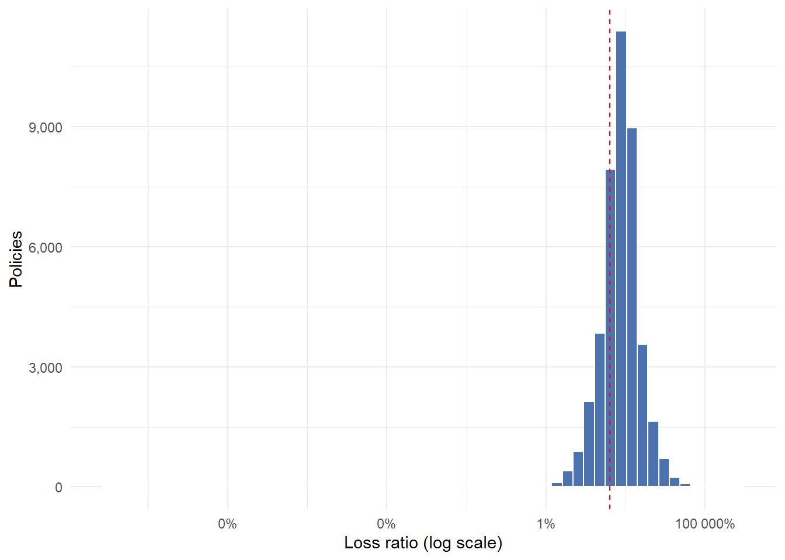
The driver-age distribution spans 22 to 82 years, centred in the mid-40s, with a modest right tail of older drivers. The under-25 segment is small in volume but structurally important: it is the conventional high-risk pool in motor underwriting and becomes a focal point of the bivariate analysis. The 65+ tail is similarly relevant, as senior drivers carry distinct accident-risk profiles.
h_va <- ggplot(clean, aes(x = vehicle_age)) +
geom_histogram(bins = 30, fill = "#4C72B0", colour = "white") +
scale_y_continuous(labels = comma, expand = expansion(mult = c(0, 0.05))) +
labs(x = NULL, y = "Number of policies") +
theme_house(base_size = 11) +
theme(axis.text.x = element_blank(),
axis.ticks.x = element_blank())
b_va <- ggplot(clean, aes(x = vehicle_age)) +
geom_boxplot(fill = "#4C72B0", colour = "grey30",
width = 0.5, outlier.alpha = 0.1) +
scale_y_continuous(breaks = NULL) +
labs(x = "Vehicle age (years)", y = NULL) +
theme_house(base_size = 11) +
theme(axis.text.y = element_blank())
(h_va / b_va + plot_layout(heights = c(4, 1))) +
plot_annotation(
title = "Most insured vehicles are between 18 and 36 years old",
subtitle = "Distribution of vehicle age across 352,340 policy-years",
caption = "Source: Spanish motor insurance portfolio (Mendeley Data).",
theme = theme(
plot.title = element_text(face = "bold", size = 13),
plot.subtitle = element_text(colour = "grey40", size = 10,
margin = margin(b = 10)),
plot.caption = element_text(colour = "grey50", size = 8, hjust = 0)
)
)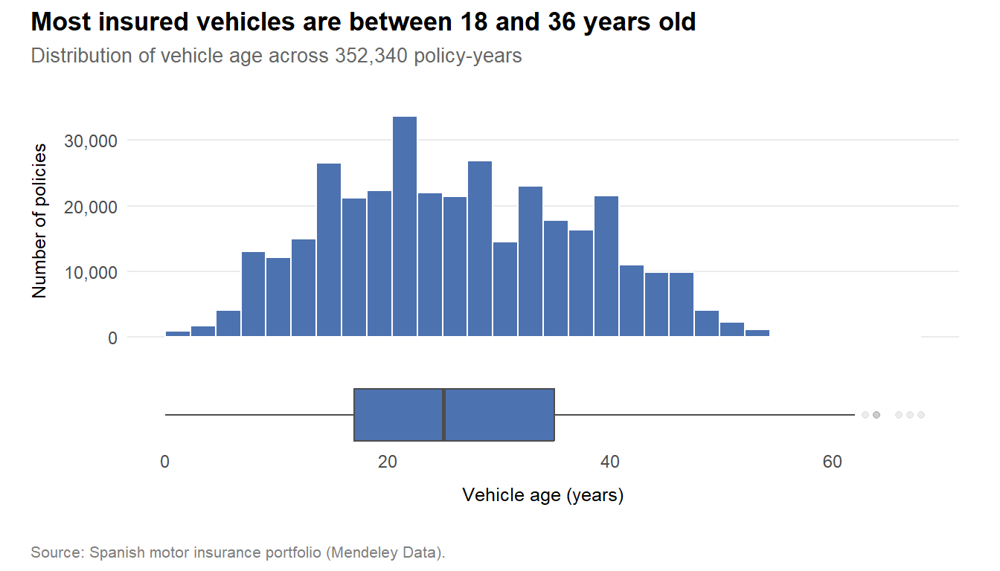
The vehicle-age distribution spans 0 to about 60 years, with most vehicles concentrated between 18 and 36 years old (the IQR) and a median around 25 years. This is an unusually aged portfolio: the bulk of insured vehicles are over 15 years old, with a long tail of vehicles older than 40. The shape suggests two underwriting considerations. Theft exposure tends to concentrate in newer, higher-value vehicles, of which this portfolio has few. Breakdown and mechanical-failure claims rise with vehicle age, which this portfolio has in abundance. These tensions surface in the bivariate analysis of coverage tier and in the driver-age × vehicle-age risk surface.
h_vv <- ggplot(clean, aes(x = vehicle_value)) +
geom_histogram(bins = 50, fill = "#4C72B0", colour = "white") +
scale_x_log10(labels = label_currency(prefix = "€", scale = 1e-3,
suffix = "k")) +
scale_y_continuous(labels = comma, expand = expansion(mult = c(0, 0.05))) +
labs(x = NULL, y = "Number of policies") +
theme_house(base_size = 11) +
theme(axis.text.x = element_blank(),
axis.ticks.x = element_blank())
b_vv <- ggplot(clean, aes(x = vehicle_value)) +
geom_boxplot(fill = "#4C72B0", colour = "grey30",
width = 0.5, outlier.alpha = 0.1) +
scale_x_log10(labels = label_currency(prefix = "€", scale = 1e-3,
suffix = "k")) +
scale_y_continuous(breaks = NULL) +
labs(x = "Vehicle value (€, log scale)", y = NULL) +
theme_house(base_size = 11) +
theme(axis.text.y = element_blank())
(h_vv / b_vv + plot_layout(heights = c(4, 1))) +
plot_annotation(
title = "Vehicle value clusters around €20-30k with a heavy upper tail",
subtitle = "Distribution of vehicle value across 352,340 policy-years (log scale)",
caption = "Source: Spanish motor insurance portfolio (Mendeley Data).\nLog scale used to reveal the central distribution; the small fraction of high-value vehicles extends beyond €100k.",
theme = theme(
plot.title = element_text(face = "bold", size = 13),
plot.subtitle = element_text(colour = "grey40", size = 10,
margin = margin(b = 10)),
plot.caption = element_text(colour = "grey50", size = 8, hjust = 0)
)
)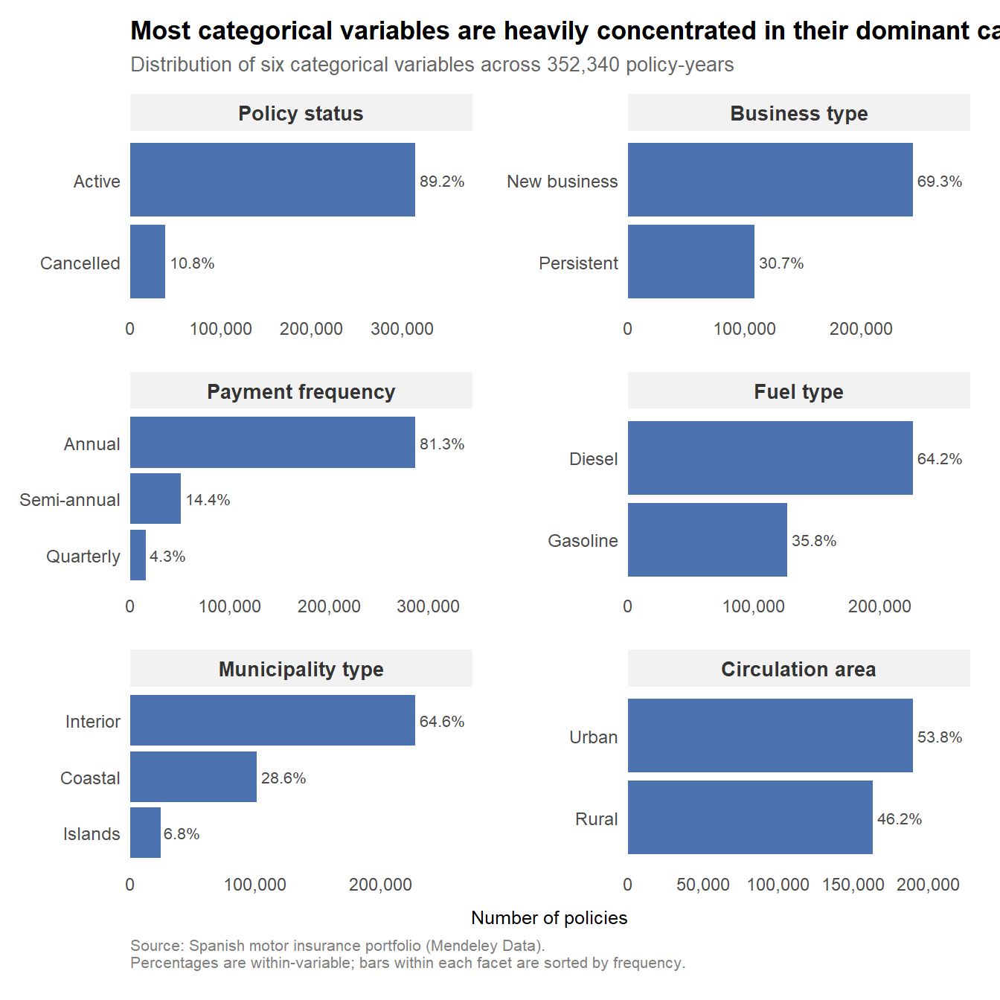
Vehicle value is right-skewed, with the bulk of policies covering vehicles worth between €20,000 and €30,000 and a small share covering higher-value vehicles above €100,000. The log-scale histogram makes the central concentration visible; on a linear scale, the rare high-value outliers would compress the typical distribution into the left edge. This concentration in mid-value vehicles is consistent with the older fleet composition described above.
h_pw <- ggplot(clean, aes(x = power_to_weight_ratio)) +
geom_histogram(bins = 50, fill = "#4C72B0", colour = "white") +
scale_x_log10() +
scale_y_continuous(labels = comma, expand = expansion(mult = c(0, 0.05))) +
labs(x = NULL, y = "Number of policies") +
theme_house(base_size = 11) +
theme(axis.text.x = element_blank(),
axis.ticks.x = element_blank())
b_pw <- ggplot(clean, aes(x = power_to_weight_ratio)) +
geom_boxplot(fill = "#4C72B0", colour = "grey30",
width = 0.5, outlier.alpha = 0.1) +
scale_x_log10() +
scale_y_continuous(breaks = NULL) +
labs(x = "Power-to-weight ratio (log scale)", y = NULL) +
theme_house(base_size = 11) +
theme(axis.text.y = element_blank())
(h_pw / b_pw + plot_layout(heights = c(4, 1))) +
plot_annotation(
title = "Most vehicles have a power-to-weight ratio between 10 and 15",
subtitle = "Distribution of power-to-weight ratio across 352,340 policy-years (log scale)",
caption = "Source: Spanish motor insurance portfolio (Mendeley Data).",
theme = theme(
plot.title = element_text(face = "bold", size = 13),
plot.subtitle = element_text(colour = "grey40", size = 10,
margin = margin(b = 10)),
plot.caption = element_text(colour = "grey50", size = 8, hjust = 0)
)
)
Power-to-weight ratio is right-skewed on the raw scale and approximately log-normal once transformed. Most vehicles fall in the 10-15 range, with a long upper tail of high-performance vehicles and a smaller tail at the low end. The upper tail carries the underwriting risk concern: power-to-weight correlates with claim frequency and severity in motor portfolios, and a small number of high-performance policies can disproportionately affect segment-level loss ratios.
ggplot(clean, aes(x = fct_infreq(policy_type))) +
geom_bar(fill = "#4C72B0", colour = "white") +
geom_text(stat = "count",
aes(label = comma(after_stat(count))),
vjust = -0.4, size = 3.2, colour = "grey30") +
scale_y_continuous(labels = comma, expand = expansion(mult = c(0, 0.15))) +
labs(
title = "Most policies cluster in the mid-comprehensive tier (CC)",
subtitle = "Distribution of Policy Type across 352,340 policy-years",
x = NULL,
y = "Number of policies",
caption = "Source: Spanish motor insurance portfolio (Mendeley Data)."
) +
theme_house(base_size = 11)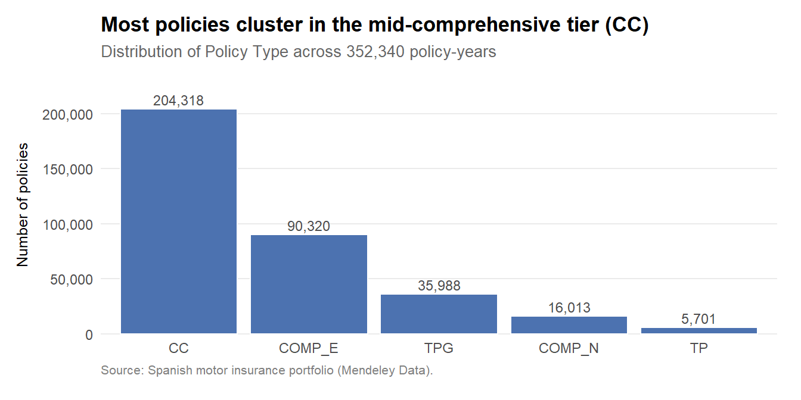
The portfolio is dominated by the two combined tiers: CC (204,318 policies, around 58%) and COMP_E (90,320 policies, around 26%). The third-party tiers (TP and TPG) together account for around 12% of policies, and COMP_N (comprehensive without excess) is a small but consequential segment at around 5%. As Section 4 shows, COMP_N carries by far the highest loss intensity relative to premium charged, while CC and COMP_E sit closer to the portfolio benchmark.
ggplot(clean, aes(x = fct_infreq(bonus_score))) +
geom_bar(fill = "#4C72B0", colour = "white") +
geom_text(stat = "count",
aes(label = comma(after_stat(count))),
vjust = -0.4, size = 3.2, colour = "grey30") +
scale_y_continuous(labels = comma, expand = expansion(mult = c(0, 0.15))) +
labs(
title = "97% of policy-years are in the Good bonus-malus category",
subtitle = "Distribution of bonus-malus category across 352,340 policy-years",
x = NULL,
y = "Number of policies",
caption = "Source: Spanish motor insurance portfolio (Mendeley Data)."
) +
theme_house(base_size = 11)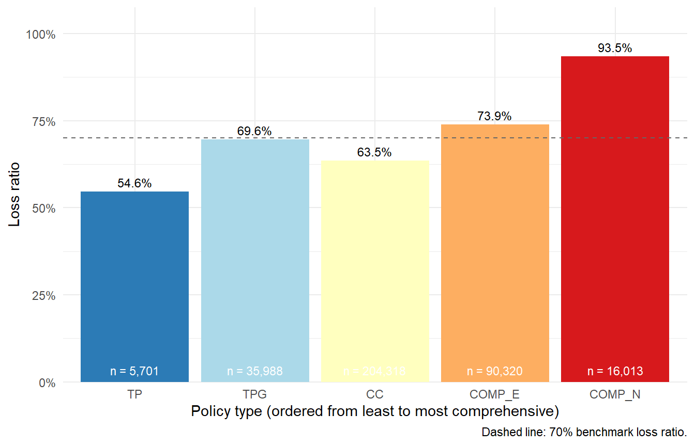
The bonus-malus distribution is extreme: 96.5% of policy-years sit in the Good category, with Neutral (2.2%) and Bad (1.3%) together accounting for the remaining 3.5%. The two smaller categories are sufficient in absolute volume for statistical testing (several thousand records each) but small in relative terms. This imbalance becomes important in Section 4.4, where the analysis shows that the small Neutral pool carries a disproportionate share of the portfolio’s loss-ratio deterioration.
cat_vars <- c("policy_status", "business_type", "payment_frequency",
"fuel_type", "municipality_type", "circulation_area")
cat_summary <- clean |>
select(all_of(cat_vars)) |>
pivot_longer(everything(), names_to = "variable", values_to = "value") |>
count(variable, value) |>
group_by(variable) |>
mutate(pct = n / sum(n)) |>
ungroup() |>
mutate(variable = factor(variable,
levels = cat_vars,
labels = c("Policy status",
"Business type",
"Payment frequency",
"Fuel type",
"Municipality type",
"Circulation area")))
ggplot(cat_summary, aes(x = fct_reorder(value, n), y = n)) +
geom_col(fill = "#4C72B0") +
geom_text(aes(label = percent(pct, accuracy = 0.1)),
hjust = -0.1, size = 2.8, colour = "grey30") +
scale_y_continuous(labels = comma, expand = expansion(mult = c(0, 0.2))) +
coord_flip() +
facet_wrap(~ variable, scales = "free", ncol = 2) +
labs(
title = "Most categorical variables are heavily concentrated in their dominant category",
subtitle = "Distribution of six categorical variables across 352,340 policy-years",
x = NULL,
y = "Number of policies",
caption = "Source: Spanish motor insurance portfolio (Mendeley Data).\nPercentages are within-variable; bars within each facet are sorted by frequency."
) +
theme_house(base_size = 11) +
theme(
strip.text = element_text(face = "bold", colour = "grey20", size = 10),
strip.background = element_rect(fill = "grey95", colour = NA),
panel.grid.major.y = element_blank(),
panel.spacing = unit(1.2, "lines")
)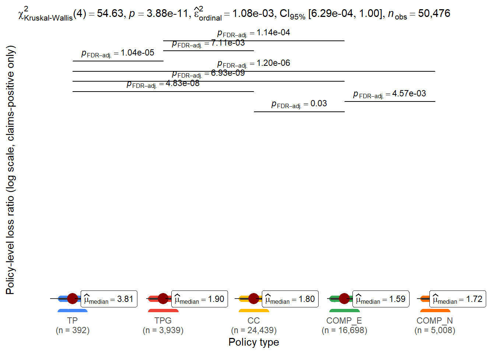
Several concentrations are worth noting. The portfolio is predominantly new business (69%) rather than persistent renewals (31%), pointing to rapid book growth across the period. New business typically carries higher loss ratios than renewals because insurers price renewals more precisely from claims history, so a fast-growing book can deteriorate even without underlying segment changes. Annual payment dominates over instalment options. Diesel vehicles outnumber gasoline by roughly two to one. Urban and rural circulation are close to balanced (54% vs 46%), though within-category loss-ratio profiles differ markedly as Section 4.5 shows. Interior locations dominate the geographic distribution (65%), with coastal and islands together accounting for 35%; despite their smaller volume, the islands segment carries the widest within-category loss-ratio spread.
The three derived KPIs are themselves variables worth profiling. At the policy level, they are highly skewed: most policies have no claims, so most loss ratios and frequencies are zero. Restricting the view to policies with at least one claim reveals the within-distribution shape that matters for segment-level analysis.
share_above_be <- clean |>
filter(total_claims > 0, is.finite(loss_ratio)) |>
summarise(share = mean(loss_ratio > 1)) |>
pull(share)
clean |>
filter(total_claims > 0, is.finite(loss_ratio),
loss_ratio >= 0.01, loss_ratio <= 100) |>
ggplot(aes(x = loss_ratio, fill = loss_ratio > 1)) +
geom_histogram(bins = 50, boundary = 1, colour = "white") +
scale_x_continuous(
trans = "log10",
breaks = c(0.01, 0.1, 1, 10, 100),
labels = c("1%", "10%", "100%", "1,000%", "10,000%")
) +
scale_y_continuous(labels = comma, expand = expansion(mult = c(0, 0.12))) +
scale_fill_manual(
values = c("FALSE" = house_muted, "TRUE" = house_highlight),
guide = "none"
) +
geom_vline(xintercept = 1, linetype = "dashed", colour = house_benchmark) +
annotate(
"text",
x = 1.15, y = Inf,
label = "Break-even (100%)",
hjust = 0, vjust = 1.2,
colour = house_benchmark, size = 3.2
) +
labs(
title = "A substantial share of claim-bearing policies exceed break-even",
subtitle = paste0(
scales::percent(share_above_be, accuracy = 0.1),
" of claim-bearing policy-years have losses exceeding their premium"
),
x = "Loss ratio (log scale)",
y = "Policy-years",
caption = "Source: Spanish motor insurance portfolio (Mendeley Data)."
) +
theme_house()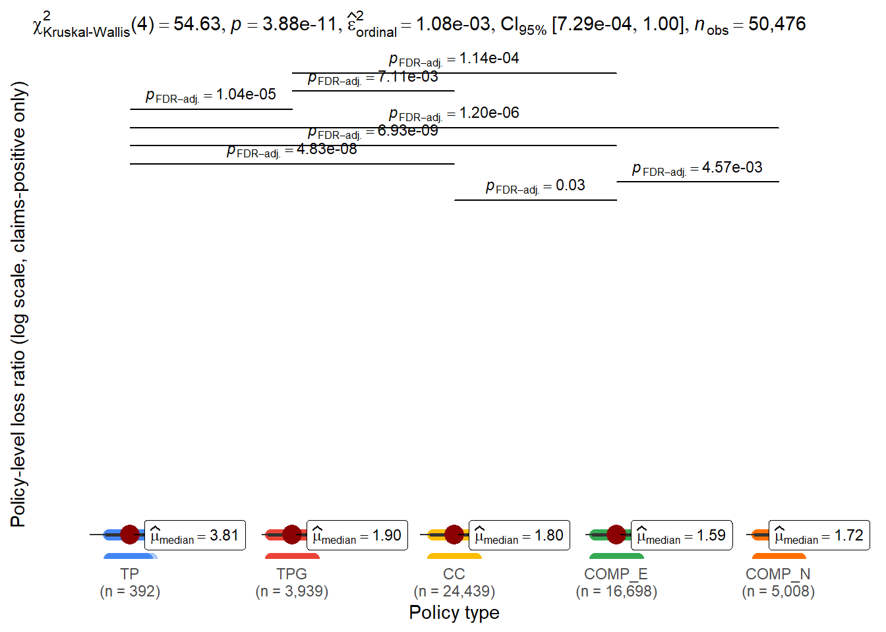
Among policies with at least one claim, the loss-ratio distribution spans nearly four orders of magnitude. The dashed grey line marks the break-even point where losses equal premium. The red bars to the right represent policy-years that returned more in claims than they collected in premium. Segment-level mean loss ratios mask this within-policy variance, which is what the volatility (coefficient of variation) analysis in Section 4 surfaces.
The univariate view raises three structural features the bivariate analysis must contend with:
bonus_score (concentrated in Good) and policy_type (concentrated in CC and COMP_E). Statistical tests must account for unequal group sizes.Before turning to bivariate analysis of the categorical risk drivers, the continuous variables are examined jointly through a correlation matrix. The correlogram surfaces three things: which variable pairs move together strongly enough to constrain interpretation downstream, which appear independent and can be treated as separate signals, and whether any pair carries multicollinearity that would distort multivariate inference.
cont_vars <- clean |>
select(driver_age, vehicle_age, age_driving_licence,
vehicle_value, seats, power_to_weight_ratio,
total_premium, total_exposure, loss_ratio) |>
filter(if_all(everything(), is.finite))
corr_matrix <- cor(cont_vars, use = "pairwise.complete.obs",
method = "spearman")
p_matrix <- cor_pmat(cont_vars, method = "spearman")
ggcorrplot(corr_matrix,
type = "lower",
lab = TRUE,
lab_size = 3,
p.mat = p_matrix,
sig.level = 0.05,
insig = "blank",
colors = c("#4C72B0", "white", house_highlight),
outline.color = "white",
tl.cex = 9) +
labs(
title = "Driver age and licence tenure are the strongest pair",
subtitle = "Spearman correlations among continuous variables; non-significant cells (p ≥ 0.05) blanked",
x = NULL, y = NULL,
fill = "Spearman ρ",
caption = "Source: Spanish motor insurance portfolio (Mendeley Data).\nSpearman rank correlation used because several variables are heavily skewed."
) +
theme_house(base_size = 10) +
theme(panel.grid = element_blank(),
legend.position = "right",
axis.text.x = element_text(angle = 45, hjust = 1, vjust = 1),
plot.margin = margin(t = 10, r = 15, b = 30, l = 30))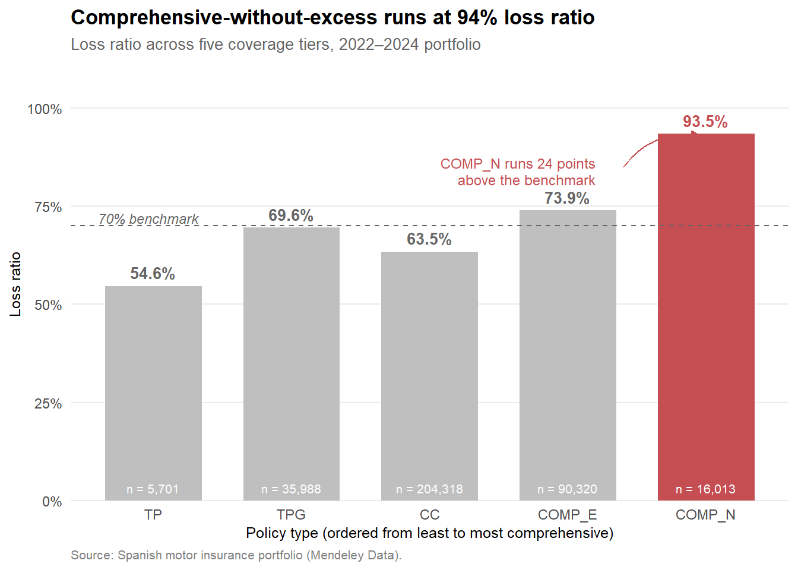
Three patterns are visible. The strongest correlation in the matrix is between driver_age and age_driving_licence (ρ = 0.86), which is structural and expected: older drivers have held licences longer. A second strong association sits between total_premium and total_exposure (ρ = 0.74), also structural, since premium earned scales with the on-risk period of a policy. The most analytically interesting cell is the moderate negative correlation between vehicle_value and power_to_weight_ratio (ρ = -0.5), indicating that higher-value vehicles in this portfolio tend to be heavier sedans rather than performance vehicles, the opposite of the pattern in younger, sportier markets. Beyond these three, all remaining pairs are weak. loss_ratio in particular shows only weak correlations with the underlying predictors, confirming that no single continuous variable explains policy-level loss outcomes on its own. This is the empirical motivation for the segment-level bivariate analysis that follows: where individual continuous variables fail to discriminate, categorical and joint structure may succeed.
The bivariate analysis investigates how the portfolio’s policy, vehicle, driver, and geographic characteristics relate to its profitability (loss ratio) and volatility (coefficient of variation of loss ratio across policies within a segment).
Four analytical principles guide the work:
sum(total_incurred) / sum(total_premium) produces the exposure-weighted metric an underwriter would price against.ggstatsplot::ggbetweenstats or ggbarstats provides inline test annotations (ANOVA, Kruskal-Wallis, chi-square). Where the comparison is across years on a ratio of sums, bootstrap confidence intervals are used because the sampling distribution of a ratio is not well-described by closed-form parametric tests.ggstatsplot::ggbetweenstats and ggbarstats call use false discovery rate (FDR) adjustment. No correction is applied across the report-wide family of tests. Given the sample size (>350,000 records) and the magnitude of the effects discussed, the substantive findings are robust to multiple-comparison concerns, but readers interpreting individual p-values should bear the report-wide test count in mind.The first question to ask of any insurance portfolio is whether the recent loss experience is stable, improving, or worsening. The aggregate view by year shows clear movement.
yr <- clean |>
group_by(year) |>
summarise(
premium = sum(total_premium),
incurred = sum(total_incurred),
exposure = sum(total_exposure),
claims = sum(total_claims),
n_pol = n(),
.groups = "drop"
) |>
mutate(
loss_ratio = incurred / premium,
frequency = claims / exposure,
severity = incurred / claims
)
yr |>
select(year, n_pol, premium, incurred, loss_ratio, frequency, severity) |>
kable(
caption = "Portfolio KPIs by year",
digits = c(0, 0, 0, 0, 4, 4, 0),
format.args = list(big.mark = ",")
)| year | n_pol | premium | incurred | loss_ratio | frequency | severity |
|---|---|---|---|---|---|---|
| 2,022 | 66,890 | 18,596,245 | 12,219,605 | 0.6571 | 0.3022 | 969 |
| 2,023 | 118,265 | 35,126,365 | 23,372,409 | 0.6654 | 0.3048 | 935 |
| 2,024 | 167,185 | 50,657,672 | 37,820,067 | 0.7466 | 0.3107 | 971 |
Three movements show up at once. Loss ratio rose from approximately 66% in 2022 to 75% in 2024, a 9-percentage-point swing in two years. Frequency edged up modestly. Severity increased more meaningfully, indicating that average claim cost rather than claim count is the principal driver. To establish whether this trajectory is real or a small-sample artefact, the bootstrap distribution of loss ratio is computed for each year.
set.seed(608)
B <- 500
boot_one_year <- function(df, B) {
n <- nrow(df)
prem <- df$total_premium
inc <- df$total_incurred
replicate(B, {
idx <- sample.int(n, n, replace = TRUE)
sum(inc[idx]) / sum(prem[idx])
})
}
boot_df <- clean |>
filter(total_premium > 0) |>
group_by(year) |>
group_modify(~ tibble(loss_ratio = boot_one_year(.x, B))) |>
ungroup()
boot_summary <- boot_df |>
group_by(year) |>
summarise(
lr_median = median(loss_ratio),
lr_lower = quantile(loss_ratio, 0.025),
lr_upper = quantile(loss_ratio, 0.975),
.groups = "drop"
)
ggplot(boot_df, aes(x = loss_ratio, y = factor(year))) +
stat_halfeye(aes(fill = factor(year)),
.width = c(.95), point_interval = "mean_qi",
alpha = 0.8, slab_colour = "white", slab_linewidth = 0.5) +
geom_vline(xintercept = 0.70, linetype = "dashed", colour = house_benchmark) +
annotate("text", x = 0.70, y = 3.55, label = "70% benchmark",
hjust = 1.05, size = 3, colour = "grey40", fontface = "italic") +
annotate("curve",
x = 0.78, xend = 0.745,
y = 3.2, yend = 3.1,
arrow = arrow(length = unit(2, "mm"), type = "closed"),
curvature = 0.3, colour = house_highlight, linewidth = 0.4) +
annotate("text",
x = 0.79, y = 3.25,
label = "2024 distribution sits\nentirely above earlier years",
hjust = 0, size = 3.2, colour = house_highlight, lineheight = 0.95) +
scale_x_continuous(labels = label_percent(accuracy = 1),
limits = c(0.6, 0.85)) +
scale_fill_manual(values = c("2022" = "grey75",
"2023" = "grey55",
"2024" = house_highlight),
guide = "none") +
labs(
title = "2024 loss ratio is well outside the prior-year range",
subtitle = "Bootstrap distribution of portfolio loss ratio by year (500 resamples)",
x = "Bootstrap loss ratio",
y = NULL,
caption = "Source: Spanish motor insurance portfolio (Mendeley Data)."
) +
theme_house(base_size = 11)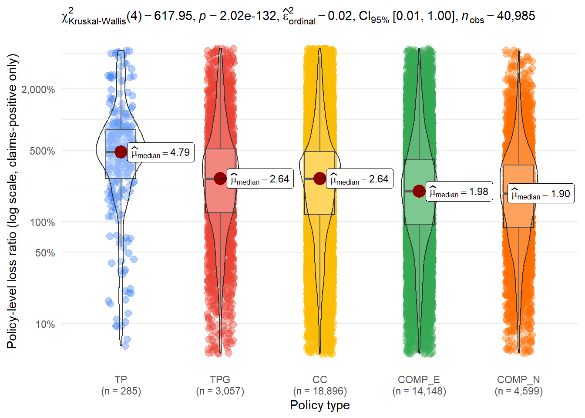
The 95% intervals for 2022 and 2023 overlap substantially, but the 2024 distribution sits entirely above both prior years. The intervals are well-separated and statistically distinct. The deterioration is a real shift, not sampling noise.
yr_per_pol <- yr |>
mutate(
premium_per_pol = premium / n_pol,
incurred_per_pol = incurred / n_pol
) |>
select(year, premium_per_pol, incurred_per_pol) |>
pivot_longer(c(premium_per_pol, incurred_per_pol),
names_to = "metric") |>
mutate(metric = factor(metric,
levels = c("premium_per_pol", "incurred_per_pol"),
labels = c("Premium per policy (€)",
"Incurred losses per policy (€)")))
ggplot(yr_per_pol, aes(x = year, y = value, colour = metric, group = metric)) +
geom_line(linewidth = 1.2) +
geom_point(size = 3.5) +
geom_text(aes(label = paste0("€", round(value))),
vjust = -1.4, size = 3.2, fontface = "bold", show.legend = FALSE) +
scale_x_continuous(breaks = c(2022, 2023, 2024)) +
scale_y_continuous(expand = expansion(mult = c(0.1, 0.25))) +
scale_colour_manual(values = c("Premium per policy (€)" = house_benchmark,
"Incurred losses per policy (€)" = house_highlight)) +
labs(
title = "Incurred losses rose faster than premium across the period",
subtitle = "Per-policy economics, 2022–2024",
x = "Year",
y = "Euros per policy",
colour = NULL,
caption = "Source: Spanish motor insurance portfolio (Mendeley Data).\nThe deterioration is decomposed in the following table."
) +
theme_house(base_size = 11) +
theme(legend.position = "top")
The aggregate decomposition shows a clear gap: premium per policy rose from €278 in 2022 to €303 in 2024 (a 9 percent increase), while incurred losses per policy rose from €183 to €226 (a 24 percent increase). Average frequency and average severity remained nearly flat across the period (frequency 0.302 to 0.311, severity €969 to €971). The portfolio-level deterioration therefore did not arise from a uniform rise in claim incidence or claim size. Where the deterioration originates is not yet clear from the aggregate view. A decomposition follows.
A standard within-versus-between decomposition isolates the source of the 8.9-percentage-point loss-ratio swing. The 2022 portfolio loss ratio is recomputed three ways: (i) with 2022 segment loss ratios and 2022 segment weights (the actual 2022 value), (ii) with 2024 segment loss ratios but 2022 segment weights (the within-segment effect: how much the deterioration would have been if mix had stayed constant), and (iii) with 2022 segment loss ratios but 2024 segment weights (the between-segment effect: how much the deterioration would have been if segments themselves hadn’t moved). The residual is the interaction. Segments are defined by policy type, the dimension that dominated the bivariate findings.
seg_year <- clean |>
filter(total_premium > 0) |>
group_by(year, policy_type) |>
summarise(
premium = sum(total_premium),
incurred = sum(total_incurred),
lr = incurred / premium,
.groups = "drop"
) |>
group_by(year) |>
mutate(weight = premium / sum(premium)) |>
ungroup()
lr_2022 <- seg_year |> filter(year == 2022) |> select(policy_type, lr_2022 = lr, w_2022 = weight)
lr_2024 <- seg_year |> filter(year == 2024) |> select(policy_type, lr_2024 = lr, w_2024 = weight)
decomp <- lr_2022 |>
full_join(lr_2024, by = "policy_type") |>
mutate(
contrib_within = w_2022 * (lr_2024 - lr_2022),
contrib_between = lr_2022 * (w_2024 - w_2022),
contrib_interaction = (lr_2024 - lr_2022) * (w_2024 - w_2022)
)
decomp_summary <- tibble(
component = c("Actual 2022 → 2024 swing",
"Within-segment effect (segments worsened)",
"Between-segment effect (mix shifted)",
"Interaction"),
value = c(
sum(decomp$lr_2024 * decomp$w_2024) - sum(decomp$lr_2022 * decomp$w_2022),
sum(decomp$contrib_within),
sum(decomp$contrib_between),
sum(decomp$contrib_interaction)
)
)
decomp_summary |>
mutate(value = scales::percent(value, accuracy = 0.1)) |>
kable(caption = "Decomposition of 2022 → 2024 portfolio loss-ratio swing")| component | value |
|---|---|
| Actual 2022 → 2024 swing | 8.9% |
| Within-segment effect (segments worsened) | 8.5% |
| Between-segment effect (mix shifted) | 0.1% |
| Interaction | 0.4% |
The decomposition is unambiguous. The within-segment effect accounts for 8.5 of the 8.9-percentage-point swing, while the between-segment effect contributes only 0.1pp and the interaction 0.4pp. The portfolio’s deterioration is therefore driven by segments themselves becoming less profitable over the period, not by a shift in business volume toward worse-performing segments. The book’s policy-type composition was stable; what changed was the loss ratio within each existing segment. The bivariate analysis in the remainder of Section 4 identifies which specific segments deteriorated and where premium adequacy is most strained, beginning with the policy-type gradient in Section 4.3.
The portfolio is segmented into five coverage tiers by policy_type, ranging from basic third-party (TP) to comprehensive without excess (COMP_N). Loss-ratio variation across these tiers reveals whether premium charged is commensurate with the broader coverage offered.
pt <- clean |>
group_by(policy_type) |>
summarise(
n_pol = n(),
premium = sum(total_premium),
incurred = sum(total_incurred),
exposure = sum(total_exposure),
claims = sum(total_claims),
loss_ratio = incurred / premium,
frequency = claims / exposure,
severity = if_else(claims > 0, incurred / claims, NA_real_),
.groups = "drop"
)
pt |>
kable(
caption = "Portfolio KPIs by policy type",
digits = c(0, 0, 0, 0, 0, 0, 4, 4, 0),
format.args = list(big.mark = ",")
)| policy_type | n_pol | premium | incurred | exposure | claims | loss_ratio | frequency | severity |
|---|---|---|---|---|---|---|---|---|
| TP | 5,701 | 1,009,417 | 551,123 | 3,768 | 503 | 0.5460 | 0.1335 | 1,096 |
| TPG | 35,988 | 8,106,186 | 5,638,790 | 24,656 | 5,108 | 0.6956 | 0.2072 | 1,104 |
| CC | 204,318 | 49,715,172 | 31,545,729 | 144,010 | 31,800 | 0.6345 | 0.2208 | 992 |
| COMP_E | 90,320 | 35,335,541 | 26,128,628 | 64,417 | 26,382 | 0.7394 | 0.4095 | 990 |
| COMP_N | 16,013 | 10,213,966 | 9,547,811 | 12,221 | 12,751 | 0.9348 | 1.0433 | 749 |
The numbers reveal a monotonic gradient. Basic third-party (TP) policies run a loss ratio of around 54%, well inside profitable territory. Loss ratio rises through TPG and CC, reaches the mid-70s for COMP_E, and arrives at COMP_N at approximately 93.5%. The COMP_N segment is within touching distance of pure-loss breakeven before any expense loading is applied.
pt_plot_data <- pt |>
mutate(
highlight = if_else(policy_type == "COMP_N", "COMP_N", "Other tiers"),
label_text = percent(loss_ratio, accuracy = 0.1)
)
ggplot(pt_plot_data, aes(x = policy_type, y = loss_ratio, fill = highlight)) +
geom_col(width = 0.7) +
geom_hline(yintercept = 0.70, linetype = "dashed", colour = "grey40") +
geom_text(aes(label = label_text,
colour = highlight),
vjust = -0.6, size = 3.6, fontface = "bold") +
geom_text(aes(label = paste0("n = ", comma(n_pol)), y = 0.02),
colour = "white", size = 2.8, vjust = 0) +
annotate("text",
x = 0.6, y = 0.72,
label = "70% benchmark",
hjust = 0, size = 3, colour = "grey40", fontface = "italic") +
annotate("curve",
x = 4.3, xend = 4.85,
y = 0.82, yend = 0.92,
arrow = arrow(length = unit(2.5, "mm"), type = "closed"),
curvature = -0.3, colour = "#C44E52", linewidth = 0.6) +
annotate("text",
x = 4.2, y = 0.84,
label = "COMP_N runs 23.5 points\nabove the benchmark",
hjust = 1, size = 3.2, colour = "#C44E52", lineheight = 0.95) +
scale_y_continuous(labels = label_percent(accuracy = 1),
limits = c(0, 1.05),
expand = expansion(mult = c(0, 0.05))) +
scale_fill_manual(values = c("COMP_N" = "#C44E52",
"Other tiers" = "grey75"),
guide = "none") +
scale_colour_manual(values = c("COMP_N" = "#C44E52",
"Other tiers" = "grey40"),
guide = "none") +
labs(
title = "Comprehensive-without-excess runs at 93.5% loss ratio",
subtitle = "Loss ratio across five coverage tiers, 2022–2024 portfolio",
x = "Policy type (ordered from least to most comprehensive)",
y = "Loss ratio",
caption = "Source: Spanish motor insurance portfolio (Mendeley Data)."
) +
theme_minimal(base_size = 11) +
theme(
plot.title = element_text(face = "bold", size = 13),
plot.subtitle = element_text(colour = "grey40", size = 10, margin = margin(b = 10)),
plot.caption = element_text(colour = "grey50", size = 8, hjust = 0),
panel.grid.major.x = element_blank(),
panel.grid.minor = element_blank(),
axis.text = element_text(size = 9),
axis.title = element_text(size = 9.5)
)
To validate that the policy-type differences reflect underlying segment behaviour rather than artefacts of skewed within-segment distributions, a non-parametric test is applied to the policy-level loss ratio (filtered to policies with claims, where the metric is informative).
Before the formal test, a ridgeline view of the policy-level loss-ratio distributions makes the within-segment shape visible across all five tiers at once.
clean |>
filter(total_claims > 0, is.finite(loss_ratio),
loss_ratio >= 0.01, loss_ratio <= 100) |>
ggplot(aes(x = loss_ratio,
y = fct_rev(policy_type),
fill = policy_type)) +
geom_density_ridges(scale = 1.4, alpha = 0.85,
colour = "white", linewidth = 0.4,
quantile_lines = TRUE, quantiles = 2) +
geom_vline(xintercept = 1,
linetype = "dashed", colour = house_benchmark) +
annotate("text", x = 1.05, y = 5.6,
label = "Break-even (100%)",
hjust = 0, size = 3, colour = house_benchmark,
fontface = "italic") +
scale_x_continuous(trans = "log10",
breaks = c(0.01, 0.1, 1, 10, 100),
labels = c("1%", "10%", "100%", "1,000%", "10,000%")) +
scale_fill_manual(values = c("TP" = "grey75",
"TPG" = "grey75",
"CC" = "grey75",
"COMP_E" = "grey75",
"COMP_N" = house_highlight),
guide = "none") +
labs(
title = "COMP_N's loss-ratio distribution sits visibly to the right of every other tier",
subtitle = "Ridgeline densities of policy-level loss ratio across five coverage tiers (claims-positive policies, log scale)",
x = "Loss ratio (log scale)",
y = NULL,
caption = "Source: Spanish motor insurance portfolio (Mendeley Data).\nWhite vertical lines mark the within-tier median."
) +
theme_house(base_size = 11) +
theme(panel.grid.major.y = element_blank(),
plot.margin = margin(t = 25, r = 15, b = 15, l = 10))
clean |>
filter(total_claims > 0,
is.finite(loss_ratio),
loss_ratio >= 0.05, loss_ratio <= 50) |>
ggbetweenstats(
x = policy_type,
y = loss_ratio,
type = "np",
pairwise.display = "significant",
p.adjust.method = "fdr",
plot.type = "boxviolin",
centrality.plotting = TRUE,
bf.message = FALSE,
ggtheme = theme_minimal()
) +
scale_colour_manual(values = c("TP" = "grey60",
"TPG" = "grey60",
"CC" = "grey60",
"COMP_E" = "grey60",
"COMP_N" = house_highlight),
guide = "none") +
scale_fill_manual(values = c("TP" = "grey60",
"TPG" = "grey60",
"CC" = "grey60",
"COMP_E" = "grey60",
"COMP_N" = house_highlight),
guide = "none") +
scale_y_continuous(
trans = "log10",
breaks = c(0.1, 0.5, 1, 5, 20),
labels = c("10%", "50%", "100%", "500%", "2,000%")
) +
coord_cartesian(ylim = c(0.05, 50)) +
labs(x = "Policy type",
y = "Policy-level loss ratio (log scale, claims-positive only)")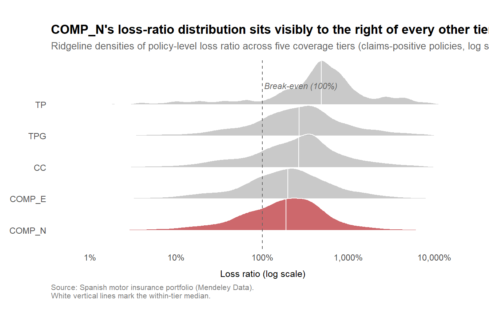
The Kruskal-Wallis test on policy-level loss ratio rejects the null of equal distributions across policy types at any conventional significance level. Pairwise comparisons (FDR-adjusted) confirm that COMP_N is significantly different from every other tier. The finding represents a systematic pricing inadequacy rather than statistical noise.
The diagnosis is that comprehensive-without-excess is sold at premium levels that do not reflect its actual loss exposure. Swiss Re’s framework describes this pattern as a premium and exposure mismatch.
bonus_score is the insurer’s primary mechanism for adjusting premium to historical claim behaviour. Three categories are used: Good (no recent claims), Neutral (intermediate), and Bad (recent claims history). The expectation is straightforward. Claim frequency should rise from Good to Bad, and loss ratio should follow, unless the pricing applied to Bad policies has already absorbed their elevated frequency.
bs <- clean |>
group_by(bonus_score) |>
summarise(
n_pol = n(),
premium = sum(total_premium),
incurred = sum(total_incurred),
exposure = sum(total_exposure),
claims = sum(total_claims),
loss_ratio = incurred / premium,
frequency = claims / exposure,
severity = if_else(claims > 0, incurred / claims, NA_real_),
avg_prem = premium / exposure,
.groups = "drop"
)
bs |>
kable(
caption = "Portfolio KPIs by bonus-malus category",
digits = c(0, 0, 0, 0, 0, 0, 4, 4, 0, 0),
format.args = list(big.mark = ",")
)| bonus_score | n_pol | premium | incurred | exposure | claims | loss_ratio | frequency | severity | avg_prem |
|---|---|---|---|---|---|---|---|---|---|
| Good | 339,838 | 98,394,834 | 68,575,327 | 241,164 | 72,324 | 0.6969 | 0.2999 | 948 | 408 |
| Neutral | 7,809 | 3,241,604 | 2,653,555 | 4,855 | 2,321 | 0.8186 | 0.4781 | 1,143 | 668 |
| Bad | 4,693 | 2,743,843 | 2,183,200 | 3,053 | 1,899 | 0.7957 | 0.6219 | 1,150 | 899 |
The frequency column behaves as expected: 0.30 for Good, 0.48 for Neutral, 0.62 for Bad, a clean monotonic rise. Premium per exposure also rises monotonically, as the bonus-malus surcharges intend. The loss ratio tells a different story.
bs_se <- clean |>
group_by(bonus_score) |>
summarise(
n_pol = n(),
incurred = sum(total_incurred),
premium = sum(total_premium),
exposure = sum(total_exposure),
claims = sum(total_claims),
loss_ratio = incurred / premium,
lr_se = sqrt((incurred / premium) * (1 - incurred / premium) / premium),
lr_lower = pmax(0, loss_ratio - 1.96 * lr_se),
lr_upper = loss_ratio + 1.96 * lr_se,
frequency = claims / exposure,
freq_se = sqrt(claims) / exposure,
freq_lower = pmax(0, frequency - 1.96 * freq_se),
freq_upper = frequency + 1.96 * freq_se,
avg_prem = premium / exposure,
.groups = "drop"
) |>
mutate(highlight = if_else(bonus_score == "Neutral", "Neutral", "Other"))
panel_style <- list(
scale_colour_manual(values = c("Neutral" = house_highlight,
"Other" = house_benchmark),
guide = "none"),
theme_house(base_size = 10),
theme(plot.subtitle = element_text(face = "bold", colour = "grey20",
size = 10, margin = margin(b = 5)))
)
p_lr <- ggplot(bs_se, aes(x = bonus_score, y = loss_ratio, colour = highlight)) +
geom_errorbar(aes(ymin = lr_lower, ymax = lr_upper), width = 0.15, linewidth = 0.6) +
geom_point(size = 4) +
geom_text(aes(label = percent(loss_ratio, accuracy = 0.1)),
vjust = -1.6, size = 3.3, fontface = "bold") +
scale_y_continuous(labels = label_percent(accuracy = 1),
expand = expansion(mult = c(0.15, 0.45))) +
labs(x = NULL, y = "Loss ratio", subtitle = "Loss ratio (with 95% CI)") +
panel_style
p_freq <- ggplot(bs_se, aes(x = bonus_score, y = frequency, colour = highlight)) +
geom_errorbar(aes(ymin = freq_lower, ymax = freq_upper), width = 0.15, linewidth = 0.6) +
geom_point(size = 4) +
geom_text(aes(label = round(frequency, 3)),
vjust = -1.6, size = 3.3, fontface = "bold") +
scale_y_continuous(expand = expansion(mult = c(0.15, 0.45))) +
labs(x = NULL, y = "Frequency", subtitle = "Claim frequency (claims per policy-year)") +
panel_style
p_prem <- ggplot(bs_se, aes(x = bonus_score, y = avg_prem, colour = highlight)) +
geom_point(size = 4) +
geom_text(aes(label = paste0("€", round(avg_prem))),
vjust = -1.6, size = 3.3, fontface = "bold") +
scale_y_continuous(expand = expansion(mult = c(0.15, 0.45))) +
labs(x = "Bonus-malus category", y = "Premium / exposure (€)",
subtitle = "Average premium per unit of exposure") +
panel_style
(p_lr / p_freq / p_prem) +
plot_annotation(
title = "Neutral pays less but loses more: the bonus-malus paradox",
subtitle = "Loss ratio, frequency, and premium per exposure by bonus-malus category, 2022–2024",
caption = "Source: Spanish motor insurance portfolio (Mendeley Data). \n95% confidence intervals from binomial (loss ratio) and Poisson (frequency) approximations.",
theme = theme(
plot.title = element_text(face = "bold", size = 13),
plot.subtitle = element_text(colour = "grey40", size = 10, margin = margin(b = 12)),
plot.caption = element_text(colour = "grey50", size = 8, hjust = 0)
)
)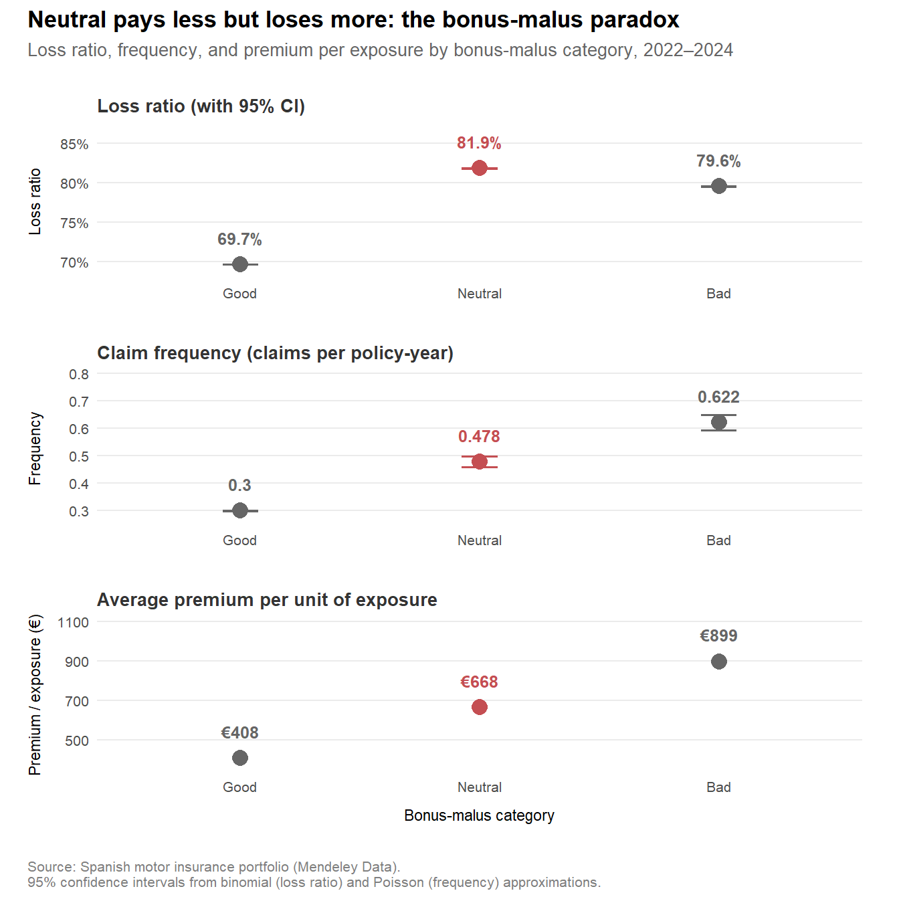
The three-panel composite makes the paradox visible. Frequency rises monotonically across Good, Neutral, and Bad (0.30, 0.48, 0.62 claims per policy-year), and average premium per exposure does the same (€408, €668, €899). Loss ratio does not follow that pattern. Neutral runs at 81.9 percent, materially above the 79.6 percent of Bad, despite collecting 26 percent less premium per exposure. The 95% confidence intervals on loss ratio and frequency confirm that the gap is not noise. The bonus-malus mechanism is absorbing the elevated frequency in the Bad tier but not in Neutral.
clean |>
filter(total_claims > 0,
is.finite(loss_ratio),
loss_ratio >= 0.05, loss_ratio <= 50) |>
ggbetweenstats(
x = bonus_score,
y = loss_ratio,
type = "np",
pairwise.display = "significant",
p.adjust.method = "fdr",
plot.type = "boxviolin",
bf.message = FALSE,
ggtheme = theme_minimal()
) +
scale_colour_manual(values = c("Good" = "grey60",
"Neutral" = house_highlight,
"Bad" = "grey60"),
guide = "none") +
scale_fill_manual(values = c("Good" = "grey60",
"Neutral" = house_highlight,
"Bad" = "grey60"),
guide = "none") +
scale_y_continuous(
trans = "log10",
breaks = c(0.1, 0.5, 1, 5, 20),
labels = c("10%", "50%", "100%", "500%", "2,000%")
) +
coord_cartesian(ylim = c(0.05, 50)) +
labs(x = "Bonus-malus category",
y = "Policy-level loss ratio (log scale, claims-positive only)")
The chart shows policy-level loss ratio among claims-positive policies, which inverts the directional pattern of the segment-level aggregate above. Good-tier policies have the lowest premium, so a single claim produces a high policy-level ratio; the segment-level view is dominated instead by the much larger share of zero-claim policies. The statistical test confirms that the Neutral and Bad distributions differ, and that Good is materially separated from both. The Neutral segment is the pricing gap. Two non-exclusive explanations are plausible:
Section 5 (panel transition analysis) examines the second hypothesis directly by tracking individual policyholders across years.
The portfolio is described by two geographic variables. municipality_type distinguishes interior, coastal, and island regions. circulation_area classifies the policy’s primary driving environment as urban or rural. Examined in isolation, neither variable produces a dramatic loss-ratio gradient. Their interaction does.
geo <- clean |>
group_by(municipality_type, circulation_area) |>
summarise(
n_pol = n(),
premium = sum(total_premium),
incurred = sum(total_incurred),
exposure = sum(total_exposure),
claims = sum(total_claims),
loss_ratio = incurred / premium,
frequency = claims / exposure,
.groups = "drop"
)
geo |>
kable(
caption = "Portfolio KPIs by municipality type and circulation area",
digits = c(0, 0, 0, 0, 0, 0, 0, 4, 4),
format.args = list(big.mark = ",")
)| municipality_type | circulation_area | n_pol | premium | incurred | exposure | claims | loss_ratio | frequency |
|---|---|---|---|---|---|---|---|---|
| Interior | Urban | 112,349 | 35,698,870 | 25,614,951 | 79,889 | 28,880 | 0.7175 | 0.3615 |
| Interior | Rural | 115,276 | 32,281,521 | 21,923,212 | 80,459 | 22,829 | 0.6791 | 0.2837 |
| Coastal | Urban | 66,562 | 20,226,486 | 14,168,191 | 47,271 | 14,090 | 0.7005 | 0.2981 |
| Coastal | Rural | 34,194 | 9,945,797 | 7,282,972 | 24,205 | 6,414 | 0.7323 | 0.2650 |
| Islands | Urban | 10,568 | 2,852,709 | 2,202,529 | 7,574 | 2,046 | 0.7721 | 0.2701 |
| Islands | Rural | 13,391 | 3,374,899 | 2,220,226 | 9,675 | 2,285 | 0.6579 | 0.2362 |
geo_segment <- clean |>
group_by(municipality_type, circulation_area) |>
summarise(
n_pol = n(),
premium = sum(total_premium),
incurred = sum(total_incurred),
loss_ratio = incurred / premium,
.groups = "drop"
) |>
mutate(
is_outlier = municipality_type == "Islands" & circulation_area == "Urban"
)
ggplot(geo_segment,
aes(x = circulation_area, y = municipality_type, fill = loss_ratio)) +
geom_tile(colour = "white", linewidth = 1.5) +
geom_text(aes(label = paste0(percent(loss_ratio, accuracy = 0.1),
"\nn = ", comma(n_pol)),
fontface = if_else(is_outlier, "bold", "plain")),
size = 3.4, lineheight = 0.95,
colour = "grey20") +
scale_fill_distiller(palette = house_sequential, direction = -1,
labels = label_percent(accuracy = 1),
name = "Loss ratio") +
scale_x_discrete(expand = c(0, 0)) +
scale_y_discrete(expand = c(0, 0)) +
coord_cartesian(clip = "off", ylim = c(0.5, 3.5)) +
labs(
title = "Urban island policies run 11 points above rural island policies",
subtitle = "Loss ratio by circulation area and municipality type",
x = "Circulation area",
y = "Municipality type",
caption = "Source: Spanish motor insurance portfolio (Mendeley Data).\nCell labels show loss ratio and number of policies."
) +
theme_house(base_size = 11) +
theme(
panel.grid = element_blank(),
legend.position = "right",
plot.margin = margin(t = 35, r = 15, b = 15, l = 50)
)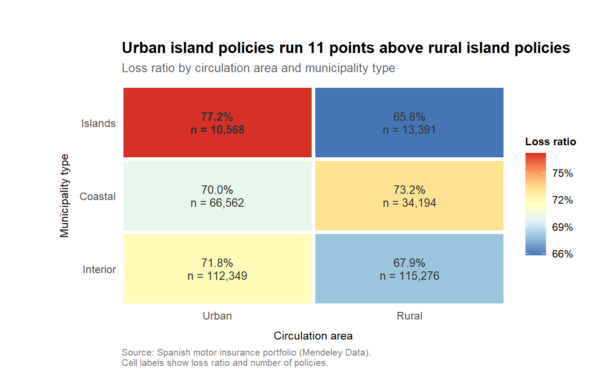
The heatmap shows the interaction at a glance. Interior regions are uniform across urban and rural. Coastal urban runs slightly higher than coastal rural. The islands show the widest within-category spread: rural island policies are the most profitable segment in the portfolio at around 65% loss ratio, while urban island policies sit at around 77%. An 11-percentage-point spread within a single municipality category points to a real underwriting gap.
clean |>
mutate(
claims_bin = if_else(total_claims > 0, "Claim", "No claim"),
geo_segment = case_when(
municipality_type == "Interior" & circulation_area == "Rural" ~ "Int·Rur",
municipality_type == "Interior" & circulation_area == "Urban" ~ "Int·Urb",
municipality_type == "Coastal" & circulation_area == "Rural" ~ "Coa·Rur",
municipality_type == "Coastal" & circulation_area == "Urban" ~ "Coa·Urb",
municipality_type == "Islands" & circulation_area == "Rural" ~ "Isl·Rur",
municipality_type == "Islands" & circulation_area == "Urban" ~ "Isl·Urb"
),
geo_segment = factor(geo_segment,
levels = c("Coa·Rur","Coa·Urb","Int·Rur",
"Int·Urb","Isl·Rur","Isl·Urb"))
) |>
ggbarstats(
x = claims_bin,
y = geo_segment,
label = "percentage",
bf.message = FALSE,
ggtheme = theme_minimal()
) +
scale_fill_manual(values = c("Claim" = house_highlight,
"No claim" = house_muted)) +
labs(x = "Geographic segment (Int = Interior, Coa = Coastal, Isl = Islands)",
y = "Share of policies")
A chi-square test of independence on the claim-versus-no-claim binary across the six geographic segments rejects the null of independence. The effect size (Cramér’s V) is small in absolute terms, which is expected when most policies have no claims, but the differences across segments are statistically robust given the sample size.
The 11-point spread within the islands category indicates that aggregate municipality-level summaries mask underlying within-region heterogeneity.
Driver age and vehicle age are continuous variables. Examining them jointly via the loss-ratio surface reveals which combinations carry the highest expected losses, beyond what either variable alone would suggest.
age_interaction <- clean |>
group_by(driver_age_band, vehicle_age_band) |>
summarise(
n_pol = n(),
premium = sum(total_premium),
incurred = sum(total_incurred),
loss_ratio = incurred / premium,
.groups = "drop"
) |>
filter(n_pol >= 500)
worst_cell <- age_interaction |>
slice_max(loss_ratio, n = 1)
ggplot(age_interaction,
aes(x = driver_age_band, y = vehicle_age_band, fill = loss_ratio)) +
geom_tile(colour = "white", linewidth = 1.5) +
geom_tile(data = worst_cell,
colour = "grey15", linewidth = 1.8, fill = NA) +
geom_text(aes(label = paste0(percent(loss_ratio, accuracy = 0.1),
"\nn = ", comma(n_pol))),
size = 3, lineheight = 0.95, colour = "grey20") +
scale_fill_distiller(palette = house_sequential, direction = -1,
labels = label_percent(accuracy = 1),
name = "Loss ratio") +
scale_x_discrete(expand = c(0, 0)) +
scale_y_discrete(expand = c(0, 0)) +
labs(
title = "Young drivers in older vehicles carry the highest loss ratios",
subtitle = "Loss ratio by driver age band and vehicle age band; cells with fewer than 500 policies suppressed",
x = "Driver age band",
y = "Vehicle age band",
caption = "Source: Spanish motor insurance portfolio (Mendeley Data).\nCell labels show loss ratio and policy count; the worst cell is outlined."
) +
theme_house(base_size = 11) +
theme(panel.grid = element_blank())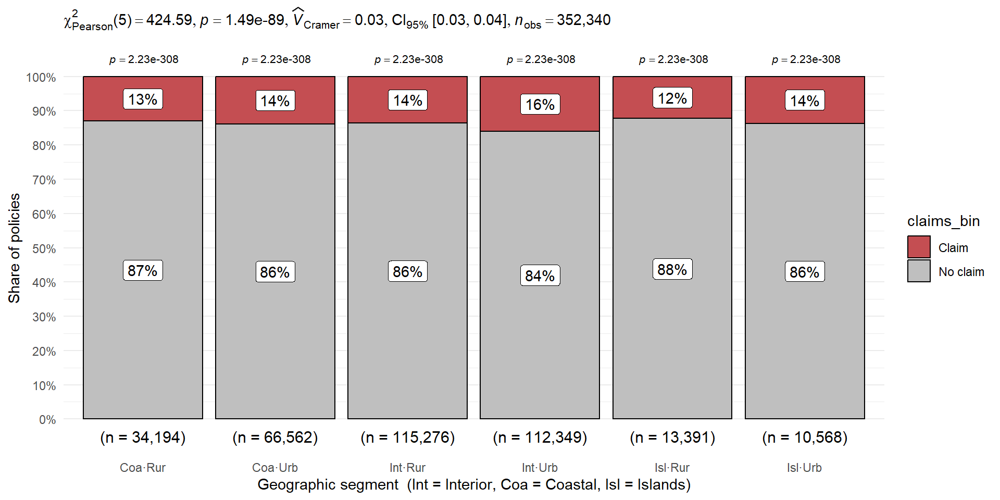
The banded heatmap makes the interaction structure explicit. The under-25 driver band paired with vehicle ages 11 and above shows the highest loss ratios in the surface. The 25 to 49 driver bands show flatter loss-ratio profiles across vehicle ages, indicating that the interaction effect is concentrated in the youngest driver segment. The 65+ band shows a mild upward drift in newer vehicles, consistent with senior drivers in higher-value vehicles carrying distinct loss profiles.
clean |>
filter(total_claims > 0,
is.finite(loss_ratio),
loss_ratio >= 0.05, loss_ratio <= 50) |>
ggbetweenstats(
x = driver_age_band,
y = loss_ratio,
type = "np",
pairwise.display = "significant",
p.adjust.method = "fdr",
plot.type = "boxviolin",
bf.message = FALSE,
ggtheme = theme_minimal()
) +
scale_colour_manual(values = c("<25" = house_highlight,
"25-34" = "grey60",
"35-49" = "grey60",
"50-64" = "grey60",
"65+" = "grey60"),
guide = "none") +
scale_fill_manual(values = c("<25" = house_highlight,
"25-34" = "grey60",
"35-49" = "grey60",
"50-64" = "grey60",
"65+" = "grey60"),
guide = "none") +
scale_y_continuous(
trans = "log10",
breaks = c(0.1, 0.5, 1, 5, 20),
labels = c("10%", "50%", "100%", "500%", "2,000%")
) +
coord_cartesian(ylim = c(0.05, 50)) +
labs(x = "Driver age band",
y = "Policy-level loss ratio (log scale, claims-positive only)")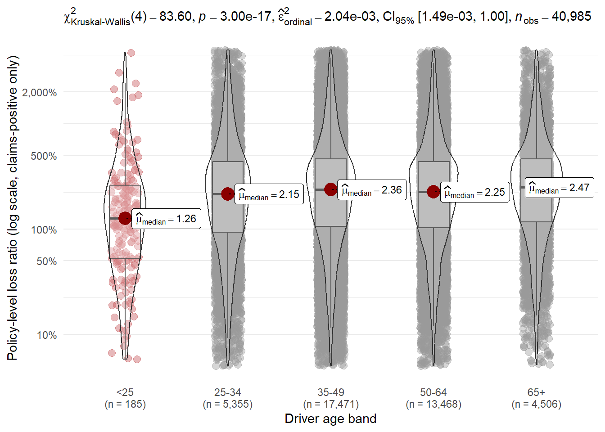
The Kruskal-Wallis test across driver-age bands rejects the equality null. Pairwise comparisons identify the under-25 segment as significantly different from the 35-49 and 50-64 bands. Both age extremes carry elevated within-segment loss variance, consistent with the wider risk distributions characteristic of younger and older drivers.
Profitability and volatility are conceptually distinct. A segment can have a low mean loss ratio with high variance, making it unpredictable even if it averages out acceptably. The coefficient of variation of policy-level loss ratio captures this directly.
Policies with non-finite loss ratios (caused by zero or missing premium values) are removed before computing volatility, to avoid distortion from undefined ratios.
rvol <- clean |>
filter(total_claims > 0,
is.finite(loss_ratio),
!is.na(loss_ratio)) |>
group_by(policy_type) |>
summarise(
n_pol = n(),
sd_lr = sd(loss_ratio, na.rm = TRUE),
.groups = "drop"
)
vol <- pt |>
select(policy_type, n_pol, loss_ratio) |>
rename(segment_lr = loss_ratio) |>
left_join(rvol |> select(policy_type, sd_lr), by = "policy_type") |>
mutate(cv_lr = sd_lr / segment_lr)
vol |>
kable(
caption = "Segment-level loss ratio and within-segment volatility",
digits = c(0, 0, 4, 3, 3),
format.args = list(big.mark = ",")
)| policy_type | n_pol | segment_lr | sd_lr | cv_lr |
|---|---|---|---|---|
| TP | 5,701 | 0.5460 | 34.929 | 63.974 |
| TPG | 35,988 | 0.6956 | 52.489 | 75.457 |
| CC | 204,318 | 0.6345 | 34.395 | 54.206 |
| COMP_E | 90,320 | 0.7394 | 90.991 | 123.054 |
| COMP_N | 16,013 | 0.9348 | 7.119 | 7.615 |
The coefficient of variation here is defined as the policy-level standard deviation of loss ratio (among claims-positive policies) divided by the segment-level loss ratio. The numerator captures the within-segment dispersion an underwriter would face when pricing an individual policy in that segment; the denominator captures the segment’s exposure-weighted central tendency. The two are computed at different levels of aggregation by design. A purely policy-level CV would weight each policy equally regardless of premium, while a purely segment-level CV (e.g., via bootstrap) would describe the segment-mean estimator’s uncertainty rather than the within-segment dispersion across policies. The chosen definition prioritises the underwriter’s perspective on individual-policy variance.
vol <- vol |>
mutate(highlight = if_else(policy_type == "COMP_N", "COMP_N", "Other"))
ggplot(vol, aes(x = segment_lr, y = cv_lr)) +
geom_hline(yintercept = mean(vol$cv_lr),
linetype = "dashed", colour = house_benchmark) +
geom_vline(xintercept = 0.70,
linetype = "dashed", colour = house_benchmark) +
geom_point(aes(size = n_pol, colour = highlight), alpha = 0.85) +
ggrepel::geom_text_repel(aes(label = policy_type, colour = highlight),
size = 3.8, fontface = "bold",
point.padding = 0.8, box.padding = 0.6,
min.segment.length = 0, seed = 1,
show.legend = FALSE) +
annotate("text", x = 0.71, y = 5,
label = "70% benchmark", hjust = 0, size = 3,
colour = house_benchmark, fontface = "italic") +
annotate("text", x = 0.52, y = mean(vol$cv_lr) + 4,
label = "Portfolio mean CV", hjust = 0, size = 3,
colour = house_benchmark, fontface = "italic") +
scale_x_continuous(labels = label_percent(accuracy = 1),
limits = c(0.5, 1.0)) +
scale_y_continuous(limits = c(0, 140),
expand = expansion(mult = c(0, 0.05))) +
scale_size(range = c(4, 14), guide = "none") +
scale_colour_manual(values = c("COMP_N" = house_highlight,
"Other" = house_benchmark),
guide = "none") +
labs(
title = "COMP_N is the worst-performing tier but the most predictable",
subtitle = "Segment loss ratio versus within-segment volatility, bubble area proportional to policy count",
x = "Segment loss ratio (profitability axis)",
y = "Coefficient of variation (volatility axis)",
caption = "Source: Spanish motor insurance portfolio (Mendeley Data).\nBubble size: number of policies in segment. Reference lines: 70% loss-ratio benchmark and portfolio-mean CV."
) +
theme_house(base_size = 11)
The two-axis view separates profitability from predictability. COMP_N has the worst segment loss ratio at 93.5% but the lowest within-segment volatility (CV 7.6), meaning its loss experience is unprofitable but highly predictable. COMP_E shows the opposite profile: a moderately high mean loss ratio of 73.9% paired with the highest volatility in the portfolio (CV 123), driven by occasional large-severity claims that dominate the segment’s variance. CC combines a moderate segment loss ratio of 63.5% with mid-range volatility, the most balanced profile in the book.
These two segments illustrate that profitability and predictability operate on independent dimensions. COMP_N is unprofitable but predictable, while COMP_E is closer to break-even on average and its tail risk dominates the within-segment variance.
The bivariate analysis identifies four loss drivers:
The methods applied so far are drawn from the visual analytics curriculum covered in Lessons 1 through 5. This section adds three methods that sit outside that curriculum, selected because they leverage structural features of the data the standard techniques cannot reach. The first method visualises how policyholders move between bonus-malus categories over time, using the dataset’s panel structure. The second method shows how unevenly losses are distributed across the policy population, using a concentration metric borrowed from actuarial practice. The third method groups segments by their multi-metric risk profile using hierarchical clustering, surfacing structural similarities that single-variable views cannot reveal.
The same policyholder can appear in 2022, 2023, and 2024 records. This creates a panel structure that single-year cross-sectional analysis discards. The bonus-malus paradox identified in Section 4 (Neutral carrying higher loss ratio than Bad) raised the question of whether bonus-score transitions are downward-rigid. A Sankey diagram of category transitions answers this directly.
trans_22_24 <- clean |>
select(insured_id, year, bonus_score) |>
pivot_wider(names_from = year, values_from = bonus_score,
names_prefix = "y") |>
filter(!is.na(y2022), !is.na(y2024)) |>
filter(!(y2022 == "Good" & y2024 == "Good")) |>
count(y2022, y2024, name = "policies") |>
mutate(across(starts_with("y"), ~ factor(.x, levels = c("Good","Neutral","Bad"))))
ggplot(trans_22_24,
aes(axis1 = y2022, axis2 = y2024, y = policies)) +
geom_alluvium(aes(fill = y2022), alpha = 0.75, width = 0.3,
colour = "white", linewidth = 0.2) +
geom_stratum(width = 0.3, fill = "grey90", colour = "grey50") +
geom_text(stat = "stratum", aes(label = after_stat(stratum)),
size = 3.6, fontface = "bold") +
scale_x_discrete(limits = c("2022", "2024"), expand = c(0.1, 0.1)) +
scale_fill_manual(values = c("Good" = "#4C72B0",
"Neutral" = "#DDB237",
"Bad" = "#C44E52"),
name = "2022 starting category") +
scale_y_continuous(labels = comma) +
labs(
title = "Recovery dominates: most non-Good policyholders improved by 2024",
subtitle = "Bonus-malus transitions 2022 to 2024 (stable-Good policyholders excluded)",
x = NULL,
y = "Policyholders",
caption = "Source: Spanish motor insurance portfolio (Mendeley Data).\nPolicyholders observed in both 2022 and 2024; stable-Good excluded."
) +
theme_house(base_size = 11) +
theme(legend.position = "top")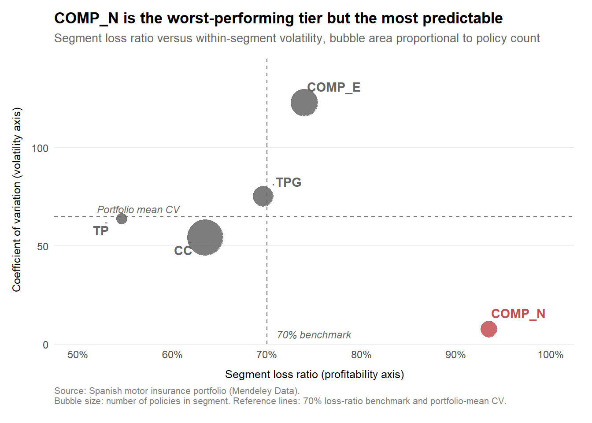
The Sankey reveals the structure of bonus-malus dynamics among policyholders whose category changed at least once between 2022 and 2024. (Policyholders who remained Good throughout, the largest single group at around 99 percent of the panel, are excluded to surface the transition dynamics.) Among the remaining policyholders, upward movement dominates: most who started in Neutral improved to Good, and most who started in Bad improved to Neutral or Good. A smaller but visible flow shows Good policyholders who moved downward into Neutral or Bad. The mechanism therefore favours recovery rather than long-term entrapment, but it also does not protect Good policyholders from downward drift entirely.
trans_summary <- clean |>
select(insured_id, year, bonus_score) |>
pivot_wider(names_from = year, values_from = bonus_score,
names_prefix = "y") |>
filter(!is.na(y2022), !is.na(y2024)) |>
mutate(
move = case_when(
y2022 == y2024 ~ "Stayed",
as.integer(y2022) < as.integer(y2024) ~ "Worsened",
TRUE ~ "Improved"
)
) |>
count(y2022, move) |>
group_by(y2022) |>
mutate(pct = n / sum(n)) |>
ungroup()
trans_summary |>
kable(
caption = "2022 to 2024 bonus-malus transitions, by starting category",
digits = c(0, 0, 0, 4),
format.args = list(big.mark = ",")
)| y2022 | move | n | pct |
|---|---|---|---|
| Good | Stayed | 48,379 | 0.9962 |
| Good | Worsened | 184 | 0.0038 |
| Neutral | Improved | 795 | 0.8595 |
| Neutral | Stayed | 56 | 0.0605 |
| Neutral | Worsened | 74 | 0.0800 |
| Bad | Improved | 612 | 0.7876 |
| Bad | Stayed | 165 | 0.2124 |
The transition table clarifies the pattern. Good policyholders are highly persistent, with 99.6% remaining Good between 2022 and 2024. Neutral and Bad policyholders mostly improve over the same period: 86.0% of Neutral policyholders improve, while 78.8% of Bad policyholders improve. The bonus-malus mechanism therefore appears to allow recovery from worse categories, rather than trapping policyholders there. The pricing concern surfaced in Section 4.4 is the short-term loss-ratio behaviour of policyholders while they sit in the Neutral and Bad pools, rather than any structural transition rigidity.
This result partially adjudicates the two hypotheses raised in Section 4.4. The downward-rigid transitions hypothesis is not supported by the data: policyholders in worse categories overwhelmingly improve rather than remain stuck. The default-tier under-loading hypothesis remains plausible and is consistent with the elevated short-term loss ratio observed in the Neutral pool, though confirming it would require examining the entry composition of the Neutral category over time, which sits beyond the scope of the present exercise. Future research applying a formal longitudinal model of bonus-malus dynamics could discriminate between these explanations more rigorously.
A second question worth asking of the portfolio is how unevenly losses are distributed across the population of policies. In a perfectly homogeneous book, every policy would contribute the same share of losses. In a heterogeneous book, a small fraction of policies accounts for the bulk of incurred losses, which is what underwriters mean when they refer to a “concentration of losses.” The Lorenz curve visualises this.
lor <- clean |>
arrange(total_incurred) |>
mutate(
cum_policies = row_number() / n(),
cum_incurred = cumsum(total_incurred) / sum(total_incurred)
)
gini_value <- 1 - 2 * sum((lor$cum_incurred + lag(lor$cum_incurred, default = 0)) / 2) / nrow(lor)
gini_value <- round(gini_value, 3)lor <- clean |>
arrange(total_incurred) |>
mutate(
cum_pol = row_number() / n(),
cum_incurred = cumsum(total_incurred) / sum(total_incurred)
)
gini_value <- 1 - 2 * sum((lor$cum_pol[-1] - lor$cum_pol[-nrow(lor)]) *
(lor$cum_incurred[-1] + lor$cum_incurred[-nrow(lor)]) / 2)
p90_loss_share <- 1 - lor$cum_incurred[which.min(abs(lor$cum_pol - 0.9))]
ggplot(lor, aes(x = cum_pol, y = cum_incurred)) +
geom_abline(slope = 1, intercept = 0,
linetype = "dashed", colour = house_benchmark) +
geom_ribbon(aes(ymin = cum_incurred, ymax = cum_pol),
fill = house_highlight, alpha = 0.15) +
geom_line(colour = house_highlight, linewidth = 1.1) +
annotate("text",
x = 0.55, y = 0.62,
label = "Equity line\n(perfect equality)",
hjust = 0, size = 3, colour = "grey45",
fontface = "italic", lineheight = 0.95) +
annotate("text",
x = 0.35, y = 0.05,
label = paste0("Gini = ", round(gini_value, 3)),
hjust = 0, size = 5, colour = house_highlight,
fontface = "bold") +
annotate("curve",
x = 0.78, xend = 0.93,
y = 0.18, yend = 0.28,
arrow = arrow(length = unit(2, "mm"), type = "closed"),
curvature = -0.3, colour = house_highlight, linewidth = 0.4) +
annotate("text",
x = 0.77, y = 0.14,
label = paste0("Top 10% of policyholders\nbear ",
round(p90_loss_share * 100),
"% of incurred losses"),
hjust = 1, size = 3.1, colour = house_highlight, lineheight = 0.95) +
scale_x_continuous(labels = label_percent(accuracy = 1),
expand = c(0, 0)) +
scale_y_continuous(labels = label_percent(accuracy = 1),
expand = c(0, 0)) +
labs(
title = paste0("Top 10% of policyholders bear ",
round(p90_loss_share * 100),
"% of incurred losses"),
subtitle = paste0("Lorenz curve of cumulative incurred losses (Gini = ",
round(gini_value, 3), ")"),
x = "Cumulative share of policyholders (sorted by incurred)",
y = "Cumulative share of incurred losses",
caption = "Source: Spanish motor insurance portfolio (Mendeley Data)."
) +
theme_house(base_size = 11)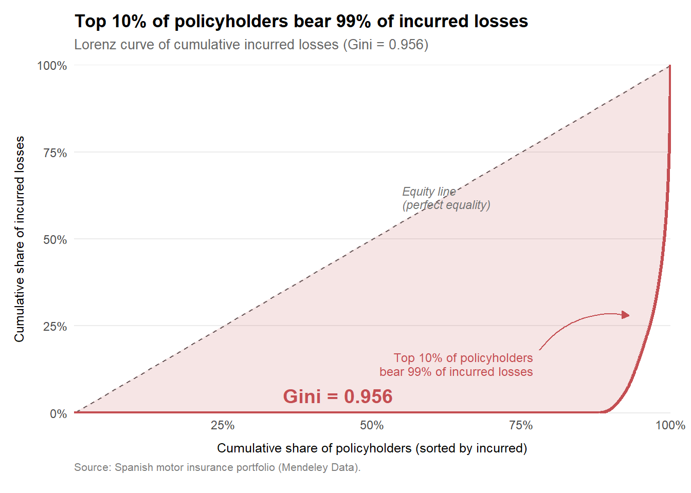
The interpretation is direct. The dashed diagonal represents perfect equality, where the bottom X% of policies would account for X% of losses. The red curve shows reality. The bottom 85% of policies (those with no claims) contribute zero losses. The top 5% of policies account for the majority of total incurred. The Gini coefficient is approximately 0.956, indicating extreme concentration.
decile_view <- clean |>
arrange(total_incurred) |>
mutate(decile = ntile(total_incurred, 10)) |>
group_by(decile) |>
summarise(
n_pol = n(),
share_premium = sum(total_premium) / sum(clean$total_premium),
share_incurred = sum(total_incurred) / sum(clean$total_incurred),
.groups = "drop"
)
decile_long <- decile_view |>
pivot_longer(c(share_premium, share_incurred),
names_to = "metric", values_to = "share") |>
mutate(metric = factor(metric,
levels = c("share_premium", "share_incurred"),
labels = c("Share of premium",
"Share of incurred")))
top10_premium <- decile_view$share_premium[10]
top10_incurred <- decile_view$share_incurred[10]
ggplot(decile_long, aes(x = factor(decile), y = share, fill = metric)) +
geom_col(position = position_dodge(width = 0.8), width = 0.75) +
geom_text(data = decile_long |> filter(decile == 10),
aes(label = percent(share, accuracy = 1)),
position = position_dodge(width = 0.8),
vjust = -0.5, size = 3.2, fontface = "bold",
colour = c(house_benchmark, house_highlight)) +
scale_y_continuous(labels = label_percent(accuracy = 1),
expand = expansion(mult = c(0, 0.12))) +
scale_fill_manual(values = c("Share of premium" = house_benchmark,
"Share of incurred" = house_highlight),
name = NULL) +
labs(
title = paste0("The top decile contributes ",
percent(top10_premium, accuracy = 1),
" of premium but ",
percent(top10_incurred, accuracy = 1),
" of incurred losses"),
subtitle = "Premium and incurred-loss shares by decile of policies (ranked low to high by incurred losses)",
x = "Decile of policies",
y = "Share of portfolio total",
caption = "Source: Spanish motor insurance portfolio (Mendeley Data)."
) +
theme_house(base_size = 11) +
theme(legend.position = "top")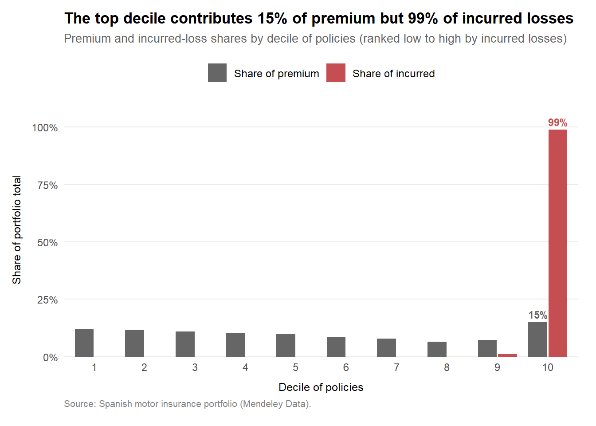
The decile view sharpens the Lorenz finding. The top decile of policies accounts for the overwhelming share of incurred losses. The premium share contributed by the same decile is significantly smaller. The two-axis gap shows that premium charged does not currently scale with incurred losses, which is the empirical manifestation of the segment-level mismatches diagnosed in Section 4.
Segments examined one variable at a time can mask the multivariate structure of risk. Two segments may share a moderate loss ratio while behaving very differently on frequency, severity, and premium adequacy. A cluster heatmap addresses this by computing a multi-metric profile for each segment, standardising the metrics to a common scale, and using hierarchical clustering to group segments that share similar profiles. The dendrogram makes the clustering visible. The dendrogram is cut at k = 3 because a two-cluster cut would collapse the analytically distinct singleton into the main book, while a four-cluster cut would over-fragment the largest group without surfacing additional structure; k = 3 is the smallest cut that exposes both the high-loss singleton and the elevated-COMP_N pair.
seg_profile <- clean |>
filter(total_premium > 0, total_exposure > 0) |>
group_by(policy_type, bonus_score) |>
summarise(
n_pol = n(),
loss_ratio = sum(total_incurred) / sum(total_premium),
frequency = sum(total_claims) / sum(total_exposure),
severity = if_else(sum(total_claims) > 0,
sum(total_incurred) / sum(total_claims),
NA_real_),
avg_prem = sum(total_premium) / sum(total_exposure),
.groups = "drop"
) |>
filter(n_pol >= 100, !is.na(severity)) |>
mutate(segment = paste(policy_type, bonus_score, sep = " · ")) |>
select(segment, loss_ratio, frequency, severity, avg_prem)
seg_matrix <- seg_profile |>
column_to_rownames("segment") |>
scale() |>
as.matrix()row_hclust <- hclust(dist(seg_matrix), method = "complete")
col_hclust <- hclust(dist(t(seg_matrix)), method = "complete")
k_row <- 3
row_clusters <- cutree(row_hclust, k = k_row)
N <- length(row_hclust$order)
M <- length(col_hclust$order)
cut_height <- mean(row_hclust$height[c(N - k_row, N - k_row + 1)])
row_order <- row_hclust$labels[row_hclust$order]
col_order <- col_hclust$labels[col_hclust$order]
classify_segment <- function(x, xend, y, yend) {
if (max(y, yend) >= cut_height) return(NA_character_)
mid_pos <- round((x + xend) / 2)
mid_pos <- max(1, min(N, mid_pos))
label <- row_hclust$labels[row_hclust$order[mid_pos]]
as.character(row_clusters[label])
}
row_ddata <- dendro_data(as.dendrogram(row_hclust), type = "rectangle")
row_segs <- segment(row_ddata) |>
rowwise() |>
mutate(cluster = classify_segment(x, xend, y, yend)) |>
ungroup() |>
mutate(cluster = factor(cluster, levels = as.character(seq_len(k_row))))
col_ddata <- dendro_data(as.dendrogram(col_hclust), type = "rectangle")
col_segs <- segment(col_ddata)
heat_long <- seg_matrix |>
as.data.frame() |>
rownames_to_column("segment") |>
pivot_longer(-segment, names_to = "metric", values_to = "z") |>
mutate(
segment = factor(segment, levels = row_order),
metric = factor(metric, levels = col_order)
)
cluster_palette <- c("1" = house_highlight,
"2" = "#4C72B0",
"3" = "grey50")
p_row <- ggplot(row_segs) +
geom_segment(aes(x = y, y = x, xend = yend, yend = xend,
colour = cluster),
linewidth = 0.6) +
scale_x_reverse(expand = expansion(mult = c(0.02, 0))) +
scale_y_continuous(limits = c(0.5, N + 0.5),
expand = c(0, 0),
breaks = NULL) +
scale_colour_manual(values = cluster_palette,
na.value = "grey60",
guide = "none") +
theme_void() +
theme(plot.margin = margin(t = 5, r = 0, b = 30, l = 5))
p_col <- ggplot(col_segs) +
geom_segment(aes(x = x, y = y, xend = xend, yend = yend),
linewidth = 0.5, colour = "grey40") +
scale_x_continuous(limits = c(0.5, M + 0.5),
expand = c(0, 0),
breaks = NULL) +
scale_y_continuous(expand = expansion(mult = c(0.02, 0)),
breaks = NULL) +
theme_void() +
theme(plot.margin = margin(t = 5, r = 5, b = 0, l = 0))
p_heat <- ggplot(heat_long, aes(x = metric, y = segment, fill = z)) +
geom_tile(colour = "white", linewidth = 0.8) +
geom_text(aes(label = sprintf("%.2f", z)),
size = 2.8, colour = "grey15") +
scale_fill_gradient2(low = "#4C72B0",
mid = "white",
high = house_highlight,
midpoint = 0,
name = "Z-score") +
scale_x_discrete(expand = c(0, 0), position = "bottom") +
scale_y_discrete(expand = c(0, 0)) +
labs(x = NULL, y = NULL) +
theme_minimal(base_size = 10) +
theme(panel.grid = element_blank(),
axis.text.x = element_text(size = 9),
axis.text.y = element_text(size = 8.5),
legend.position = "right",
legend.key.height = unit(1.2, "cm"),
plot.margin = margin(t = 5, r = 5, b = 5, l = 0))
(patchwork::plot_spacer() + p_col +
p_row + p_heat) +
plot_layout(ncol = 2, widths = c(1, 4), heights = c(1, 4)) +
plot_annotation(
title = "Segments cluster into three distinct risk profiles",
subtitle = paste0("Hierarchical clustering of segments and metrics ",
"(Euclidean distance, complete linkage); ",
"rows coloured by k = 3 cut"),
caption = paste0("Source: Spanish motor insurance portfolio (Mendeley Data).\n",
"Metrics scaled to z-scores prior to clustering. ",
"Branch colours indicate the three row clusters; ",
"shared trunk segments shown in grey."),
theme = theme(
plot.title = element_text(face = "bold", size = 13),
plot.subtitle = element_text(colour = "grey40", size = 10,
margin = margin(b = 10)),
plot.caption = element_text(colour = "grey50", size = 8, hjust = 0)
)
)
The clustering algorithm groups segments by similarity across all four standardised metrics simultaneously. Three groups emerge. The largest spans eleven segments, covering TP, TPG, CC, and COMP_E across all bonus tiers, together with COMP_N · Good, all sharing balanced profiles close to the portfolio mean. The second cluster is a tight pair, COMP_N · Neutral and COMP_N · Bad, defined by elevated frequency and average premium. The third is a singleton, TPG · Bad, isolated by its very high loss ratio and severity. The result sharpens the COMP_N diagnosis from Section 4.3. The elevated loss intensity is not uniform across the COMP_N product; it sits in the two bonus-malus tiers (Neutral and Bad) where Section 4.4 already identified premium inadequacy. The clustering and the bonus-malus paradox therefore point to the same pattern from two angles. The dendrogram quantifies the separations: the largest vertical jump isolates TPG · Bad, with the COMP_N · Neutral and COMP_N · Bad pair separating from the main group at the next level down.
This analysis of a Spanish motor insurance portfolio across 2022 to 2024 examined the distributional shape of policy, vehicle, driver, and geographic characteristics, and investigated bivariate relationships with portfolio profitability and volatility. The key findings are summarised below.
The exercise demonstrates that visual analytics serves three distinct functions in a portfolio review. The first is descriptive, characterising the shape and concentration of the variables that constitute the book. The second is diagnostic, surfacing the segments where premium and exposure are out of balance. The third is communicative, presenting findings in a form that supports further investigation. The bonus methods applied in Section 5 illustrate that the most informative approaches sometimes exploit data-structural features (panel observation, concentration of loss, multivariate clustering) rather than summarising marginal distributions.
The R session details below document the exact computing environment used to produce this report.
sessionInfo()
## R version 4.5.3 (2026-03-11 ucrt)
## Platform: x86_64-w64-mingw32/x64
## Running under: Windows 11 x64 (build 26200)
##
## Matrix products: default
## LAPACK version 3.12.1
##
## locale:
## [1] LC_COLLATE=English_Singapore.utf8 LC_CTYPE=English_Singapore.utf8
## [3] LC_MONETARY=English_Singapore.utf8 LC_NUMERIC=C
## [5] LC_TIME=English_Singapore.utf8
##
## time zone: Asia/Singapore
## tzcode source: internal
##
## attached base packages:
## [1] stats graphics grDevices utils datasets methods base
##
## other attached packages:
## [1] knitr_1.51 scales_1.4.0 patchwork_1.3.2 ggrepel_0.9.8
## [5] ggdendro_0.2.0 ggalluvial_0.12.6 ggcorrplot_0.1.4.1 ggridges_0.5.7
## [9] ggdist_3.3.3 ggstatsplot_1.0.0 naniar_1.1.0 skimr_2.2.2
## [13] janitor_2.2.1 readxl_1.4.5 lubridate_1.9.5 forcats_1.0.1
## [17] stringr_1.6.0 dplyr_1.2.1 purrr_1.2.2 readr_2.2.0
## [21] tidyr_1.3.2 tibble_3.3.1 ggplot2_4.0.2 tidyverse_2.0.0
##
## loaded via a namespace (and not attached):
## [1] tidyselect_1.2.1 Rmpfr_1.1-2 farver_2.1.2
## [4] statsExpressions_2.0.0 S7_0.2.1 fastmap_1.2.0
## [7] pacman_0.5.1 bayestestR_0.17.0 digest_0.6.39
## [10] timechange_0.4.0 lifecycle_1.0.5 multcompView_0.1-11
## [13] magrittr_2.0.5 compiler_4.5.3 rlang_1.2.0
## [16] tools_4.5.3 yaml_2.3.12 ggsignif_0.6.4
## [19] labeling_0.4.3 htmlwidgets_1.6.4 bit_4.6.0
## [22] plyr_1.8.9 repr_1.1.7 RColorBrewer_1.1-3
## [25] SuppDists_1.1-9.9 withr_3.0.2 grid_4.5.3
## [28] datawizard_1.3.1 paletteer_1.7.0 MASS_7.3-65
## [31] insight_1.5.0 mvtnorm_1.3-7 cli_3.6.5
## [34] rmarkdown_2.31 crayon_1.5.3 generics_0.1.4
## [37] otel_0.2.0 RcppParallel_5.1.11-2 rstudioapi_0.18.0
## [40] reshape2_1.4.5 tzdb_0.5.0 parameters_0.28.3
## [43] cachem_1.1.0 parallel_4.5.3 effectsize_1.0.2
## [46] cellranger_1.1.0 base64enc_0.1-6 vctrs_0.7.2
## [49] boot_1.3-32 jsonlite_2.0.0 hms_1.1.4
## [52] bit64_4.6.0-1 visdat_0.6.0 correlation_0.8.8
## [55] BWStest_0.2.3 PMCMRplus_1.9.12 glue_1.8.1
## [58] rematch2_2.1.2 distributional_0.7.0 stringi_1.8.7
## [61] gtable_0.3.6 gmp_0.7-5.1 pillar_1.11.1
## [64] htmltools_0.5.9 R6_2.6.1 vroom_1.7.1
## [67] evaluate_1.0.5 memoise_2.0.1 snakecase_0.11.1
## [70] rstantools_2.6.0 Rcpp_1.1.1 xfun_0.57
## [73] kSamples_1.2-12 pkgconfig_2.0.3